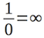

［＃ページの左右中央］
明治二十四年四月十九日いわゆる『第一高等中学校不敬事件』ののちに、余のためにその生命を
捨し余の
先愛内村加寿子に
謹んでこの著を献ず、願くは彼女の
霊天に在りて主と
偕に安かれ。
鑑三
［＃改ページ］
［＃ページの左右中央］
“If I can put one touch of a rosy sunset into the life of any man or woman, I shall feel that I have worked with God.”―― George MacDonald.
［＃改ページ］
心に慰めを要する苦痛あるなく、身に艱難の迫るなく、平易安逸に世を渡る人にして、神聖なる心霊上の記事を見るも、ただ人物批評または文字解剖の材料を探るにとどまるものは至少の利益をもこの書より得ることなかるべし。
しかれども信仰と人情とにおける兄弟姉妹にして、記者とともに心霊の奥殿において霊なる神と交わり、悲哀に沈む人霊と同情推察の交換をなさんとするものは、この書より多少の利益を得ることならんと信ず。
この書は著者の自伝にあらず、著者は苦しめる基督信徒を代表し、身を不幸の極点に置き、基督教の原理を以て自ら慰さめんことを勉めたるなり。
書中引用せる欧文は必要と認むるものにして原意を害なわずして翻訳し得るものは著者の
意訳を附せり、しかれども訳し得ざるものまたは訳するの必要なきものはそのままに存し置けり、ゆえに欧文を解し得ざる人といえどもこの書を読むにおいて少しも不利益を感ぜざることと信ず。
明治二十六年一月二十八日
摂津中津川の辺において 内村鑑三
［＃改ページ］
この書世に生れ出てより五ヶ月今や第二版を請求せらるるに至れり未だ需要の多からざる純粋基督教書籍にしてここに至りしは満足なる結果と称して可ならむ
第二版は初版と異なるところはなはだ少し、誤植を訂正し引用欧文の訳解を増補せしのみ
著者の拠る所は人性深底の経

なり、ゆえに教派的の嫌悪文字的の貶評は彼の辞せざるところなりもしこの「
狷介奇僻」の著にしてなお同胞を慰むるの具たるを得ば著者は感謝して止まざるなり。
明治二十六年七月十八日
鉄拐山の麓において
内村鑑三
［＃改ページ］
この書初めて成るや余はもちろんまず第一にこれを余の父に送れり（彼は今は主に在りて雑司ヶ谷の墓地に眠る）。彼れ一読して涙を流して余に告げていわく、この書成りて今や汝は死すとも可なり、後世、或は汝の精神を知る者あらんと。余はまたその一本を余の旧友Ｍ・Ｃ・ハリス氏に贈りたり（彼は今や美以教会の監督として朝鮮国に在り）。彼れ一読して余に書送していわく、この書けだしペンが君の手より落ちて後にまで存せんと。かくて余の父と友とに祝福せられて世に出でしこの小著は彼らの予期に違わず、版を磨滅すること二回に及びて、さらにまたここに改版を見るに至れり。その文の拙なる、その想の粗なる、取るに足らざる書なりといえども、しかもその発刊以来十八年後の今日なお需要の絶えざるを見て、余は暫時的ならざる小著を世に供せしの特権に
与りしを深く神に感謝せざるを得ず。願う、余の慈父と師友との祈祷空しからずして、この著のさらに世の憂苦を除き去るの一助として存せんことを。
内村鑑三
［＃改ページ］
この書今年を以て発行満三十年に達す。大なる光栄である。感謝に耐えない。
今より三十年前に日本において日本人の基督教文学なる者はなかったと思う。もしあったとすれば、それは欧米基督教文学の翻訳であった。日本人自身が基督教の事について独創の意見を述べんと欲するがごとき、僭越の行為であるかのごとくに思われ、あえてこの事をなす者はなかった。ちょうどその頃の事であった、米国の学校において余と同級生たりし米国人某氏が余を京都の寓居に訪うた。彼は余に問うていうた「君は今何をなしつつあるか」と。余は彼に答えていうた「著述に従事しつつある」と。彼はさらに問うていうた「何を
翻訳しつつあるか」と。余は答えていうた「余は自分の思想を著わしつつある」と。この答に対して彼は「
本当に！」というより他に
辞がなかった。誠に当時の米国人（今もなおしかり）の日本の基督信者に対する態度はたいていかくのごときものであった。そしてかくのごとき時にあたって、欧米の教師に依らずして、ただちに日本人自身の信仰的実験または思想を述べんと欲するがごときは大胆極まる
企図であった。しかるに余は神の
祐助により恐る恐るこの事を
行って見た。ことに何よりも文学を嫌いし余のことであれば、美文として何の取るべき所なきはもちろんであった。余はただ心の中に
燃る
思念に強いられ止むを得ず筆を執ったのである。
この書初めて出て第一にこれを歓迎してくれた者は当時の『護教』記者故山路愛山君であった。君は感興のあまり鉄道馬車の内に在りてこれを通読したりという。しかしその他に基督教会の名士または文士にしてこれを歓迎してくれた者はなかった。或は「困難の
問屋である」といいて冷笑する者もあり、或は「国人に
捨られし時」などと唱えて自分を国家的人物に擬するは
片腹痛しと嘲ける者もあった。しかし余は教会と教職とに問わずしてただちに人の霊魂に訴えた。しかして数万の霊魂は余の霊魂の
叫に
応えてくれた。余の執筆の業はこの小著述を以て始った。余はこの著を以て独り基督教文壇に登った。しかして教会ならびに教職の同情援助は余の身に
伴わざりしといえども、神の恩恵と平信徒の同情との余に加わりしが故に、余は今日に至るを得たのである。教会の援助同情の信仰的事業の成功になんらの必要なき事はこの一事を以ても知らるるのである。神は日本人を以て日本国を救い給うと信ずる。神は日本に日本特有の基督教文学を起し給いし事を感謝する。この書小なりといえども、外国宣教師の手を離れ、教会の力を
藉ずして、ただちに神に
聴つつその御言を伝うる卒先者の一たりし事を以て光栄とする。余はまたここにエベネゼル（助けの石）を立て、サムエルとともにこれに
記していう「エホバここまで我を助け給えり」と（
撒母耳前書七章十二節）。
大正十二年（一九二三年）二月七日
東京市外柏木において
内村鑑三
［＃改丁］
我は死については生理学より学べり、これを詩人の哀歌に読めり、これを伝記者の記録に見たり、時には死体を動物学実
室に解剖し、生死の理由を研究せり、時には死と死後の有様について高壇より公衆に
向て余の思想を
演べたり、人の死するを聞くや、或は
聖経の章句を引用し、或は英雄の死に際する時の
状を
語て、死者を
悲む者を慰めんとし、もし余の
言に
依て気力を回復せざるものある時は余は
心竊かにその人の信仰薄きを歎じ理解の
鈍きを
責たり、余は知れり死は生を有するものの避くべからざることにして、生物界連続の必要なるを、かつ思えらく
古昔の英雄或は勇み或は感謝しつつ世を去れり、余も何ぞ
均しく為し
能わざらんやと、ことに宗教の
助あり、復活の
望あり、もし余の愛するものの死する時には余はその
枕辺に立ち、讃美の歌を
唱え、聖書を朗読し、かつて彼をしてその父母の安否を問わんがため一時郷里に帰省せしむる時讃美と祈祷とを以て彼の
旅出を送りし時、暫時の離別も苦しけれどもまた遭う時の
悦を
楽み、涙を隠し
愁懼を包み、
潔よく彼の
門出を送りしごとく彼の
遠逝を送らんのみと。
ああ余は死の学理を
知り、また心霊上その価値を
了れり、しかれどもその深さ、痛さ、
悲さ、
苦さはその寒冷なる手が余の愛するものの身に
来り、余の連夜熱血を
灌ぎて捧げし祈祷をも
省みず、余の全心全力を
擲ち余の
命を捨てても彼を救わんとする
誠心をも省みず、
無慙にも無慈悲にも余の
生命より貴きものを余の手よりモギ取り去りし時始めて
予察するを得たり。
生命は愛なれば愛するものの
失せしは余自身の失せしなり、この完全最美なる
造化、その
幾回となく余の心をして絶大無限の思想界に逍遙せしめし千万の
不滅燈を以て照されたる
蒼穹も、その
春来るごとに余に永遠希望の雅歌を歌いくれし
比翼を有する森林の親友も、その菊花
香しき頃
巍々として千秋に
聳え常に余に愛国の情を喚起せし
芙蓉の山も、余が愛するものの失せてより、星は光を
失て夜暗く、鶯は哀歌を弾じて心を
傷ましむ、
富嶽も今は余のものならで、かつて異郷に在りし時、
モナドナックの
倒扇形を見、
コトパキシの高きを望みし時、わが故郷ならざりしがゆえにその美と厳とは
反て孤独悲哀の情を喚起せしごとく、この世は今は異郷と変じ、余はなお
今世の人なれどもすでにこの世に属せざるものとなれり。
愛せしものの死せしより
来る苦痛はわずかにこの世を失ないしに
止まらざりしなり、この世は
何時か去るべきものなれば今これを失うも三十年の後に失うも大差なかるべし、しかれども余の
誠心の
貫かざるより、余の満腔の
願として
溢出せし祈祷の聴かれざるより（人間の眼より評すれば）余は懐疑の悪鬼に襲われ、信仰の立つべき土台を失い、これを地に求めて得ず、これを空に
探て当らず、無限の空間余の身も心も置くべき処なきに至れり。これぞ真実の無
限地獄にして永遠の刑罰とはこのことをいうならんと思えり、余は基督教を信ぜしを悔いたり、もし余に愛なる神ちょう思想なかりせばこの苦痛はなかりしものを、余は人間と生れしを
歎ぜり、もし愛情ちょうものの余に存せざりしならば余にこの落胆なかりしものを、ああ
如何にしてこの傷を
愈すを得んや。
医師余の容体を見て奮興剤と催眠薬とを勧む、しかれども何物か
傷める心を
治せんや、友人は転地と旅行とを勧む、しかれども
山川今は余の敵なり、哲理的の冷眼を以て死を学び思考を転ぜんとするも得ず、牧師の
慰言も親友の
勧告も今は
怨恨を起すのみにして、余は
荒熊のごとくになり「愛するものを余に
帰せよ」というより
外はなきに至れり。
ああ余を医する薬はなきや、宇宙間余を復活せしむる力は存せざるか、
万物ことごとく希望あり、余のみ失望を以て終るべきか。
時に声あり胸中に
聞ゆ、細くしてほとんど区別し難し、なおよく聞かんと欲して心を沈むればその声なし、しかれども
悪霊懐疑と失望とを以て余を
挫かんとする時その声また聞ゆ、いわく「生は死より強し、生は
無生の土と空気とを変じ
アマゾンの森となすがごとく、生は
無霊の動物体を取り汝の愛せし真実と貞操の現象となせしごとく、生は人より天使を造るものなり、汝の信仰と学術とはいまだここに達せざるか、この地球がいまだ他の惑星とともに星雲として存せし時、または凝結少しく度を進め一つの溶解球たりし時、これぞ億万年ののち
シャロンの
薔薇を生じ
レバノンの
常盤樹を繁茂せしむる神の楽園とならんとは
誰か
量り知るを得しや。
最始の博物学者は
※ ［＃「虫＋占」、U+86C5、18-5］
［＃「虫＋占」、U+86C5、18-5］の変じて
蛹と成りしときは生虫の死せしと思いしならん、他日美翼を翻えし日光に逍遙する
蛾はかつて地上に
匍匐せし
見悪くかりしものなりとは信ずることの難かりしならん。暗黒時代より信仰自由と代議政体生れ、三十年戦争の劇場としてほとんど砂漠と成りし
独逸こそ今は中央欧羅巴の最強国となりしにあらずや、地球と人類が年を越ゆるほど生は死に勝ちつつあるにあらずや、さらば
望と徳とを有し神と人とに
事えんと己を忘れし汝の愛するものが今は死体となりしとて何ぞ失望すべけんや、理学も歴史も哲学も皆希望を説教しつつあるに何ぞ汝独り失望教を信ずるや」。
“Life mocks the idle hate
Of his arch-enemy Death, ― yea sits himself
Upon the tyrant's throne, the sepulchre,
And of the triumphs of his ghostly foe
Makes his own nourishment.”―― Bryant.
然り余は信ず余の
救主は死より復活したまいしを、
義人を殺してその人死せりと信ぜし
猶太人のあさはかさよ、何ぞ
ヒマラヤ山を
敲いて山
崩れしと信ぜざる、余が愛するものは死せざりしなり、自然は自己の造化を捨てず、神は己の造りしものを
軽ずべけんや、彼の
体は
朽しならん、彼の死体を包みし麻の
衣は土と化せしならん、しかれども彼の心、彼の愛、彼の勇、彼の節――ああもしこれらも肉とともに消ゆるならば、
万有は我らに誤謬を説き、聖人は世を欺けり、余は
如何にして如何なる体を以て如何なる処に再び彼を見るやを知らず、ただ
“Love does dream, Faith does trust
Somehow, somewhere meet we must.”―― Whittier.
〔愛の夢想を我疑わじ
何様か
何処かで相見んと〕
しかれども彼は死せざるものにして余は
何時か彼と相会することを得るといえども彼の死は余にとっては最大不幸なりしに相違なし、神もし神なれば
何故に余の祈祷を聴かざりしや、神は自然の法則に勝つ能わざるか、或は祈祷は無益なるものなるか、或は余の祈祷に熱心足らざりしか、或は余の罪深きが故に聞かれざりしか、或は余を罰せんがためにこの不幸を余に
降だせしか、これ余の聞かんと欲せし所なり。
細き声またいわく、「自然の法則とは神の意なり。
雷は彼の声にして嵐は彼の口笛なり、然り、死もまた彼の天使にして彼が彼の愛するものを彼の
膝下に呼ばんとする時
遣し賜う
救使なり」と。
ああ
誰か神意と自然の法則とを区別し得るものあらんや、神もし余の愛するものを
活かさんと欲せば自然の法則によりて活かせしのみ、
余輩神を信ずるものはこれに
依て神に謝す、しかれども神を信ぜざるものは或はこれを医薬の効に帰し、或は衛生の力に帰し、治癒の元なる神を讃美せざるなり、神の何たるを知り、自然の法則の何たるやを知れば「神は自然に負けたり」との
言は決して出づべきものにあらず。しからば祈る何の要かある、神は祈祷に応じて雨を賜わず、また聖者の祈祷に反して種々の難苦を
下せり、祈らずして神命に従うに
若かず、祈祷の要は
何処にあるや。
これ難問なり、余は余の愛するものの失せしより数月間祈祷を廃したり、祈祷なしには箸を取らじ、祈祷なしには枕に就かじと堅く誓いし余さえも今は神なき人となり、恨を以て膳に向い、涙を以て
寝所に就き、祈らぬ人となるに至れり。
ああ神よ
恕し賜え、
爾は爾の子供を
傷けたり、彼は
痛のゆえに爾に近づくこと
能わざりしなり、爾は彼が祈らざる故に彼を捨てざりしなり、
否な、彼が祈りし時に
勝りて爾は彼を恵みたり、彼祈り得る時は
爾の特別の
恵と
慰とを要せず、彼祈り能わざる時彼は爾の擁護を要する最も切なり、余は慈母がその子の病める時に
言語に礼を失し易く、
小言がましき時にあたって慈愛の情の
平常に
勝り病子を看護するを見たり、爾無限の慈母も余の
痛める時に余を愛する余が平常無事の時の比にあらざるなり、余の愛するもの失してのち、余が宇宙の漂流者となりし時、その時こそ爾が爾の無限の愛を余に示し得る時にして、余が爾を
捨んとする時爾は余の
迹を
逐い余をして爾を離れ得ざらしむ。
然り祈祷は無益ならざりしなり、十数年間一日のごとく朝も夕も爾に祈りつつありしが故に
今日この思わざるの
喜と
慰とを爾より受くるを得るなり。
ああ父よ、余は爾に感謝す、爾は余の祈りを
聴賜えり、汝かつて余に教えていわく、肉のために祈るなかれ霊のために祈れよと、しかして余は余の愛するものとともに爾に祈るにこの世の幸福を以てせざりしなり、もしそのために祈りし時は必ず「もし
御意に
叶わば」の語を付せり、自己の
願事を聴かば信じ、
聴ずば恨むはこれ偶像に
願を掛けるもののなす所にして、基督信者の為すべき事にあらざるなり、ああ余は祈祷を廃すべけんや、余は
今夕より以前に勝る熱心を以て同じ祈祷を爾に捧ぐべし。
時に
悪霊余に
告ていわく、「汝祈祷の熱心を以て不治の病者を救いし例を知らざるか、汝の祈祷の聴かれざりしは汝の熱心足らざりしが故なり」と、もししからば余の愛するものの死せしは余の熱心の足らざりしが故か、しからば彼を死に至らしめし罪は余にあり、余は実に余の愛せしものを殺せしものなり、もし熱心が病者を救い得ばその熱心を有せざる人こそ憐むべきかな、余は余の信仰の足らざるを知る、しかれども余は余の熱心のあらん限り祈りたり、しかして聴かれざりしなり、もしなお余の熱心の足らざるを以て余を責むるものあらば、余は余の運命に
安ずるより
他に
途なきなり。
ああ神よ、
爾は我らの有せざるものを請求せざるなり、余は余の有するだけの熱心を以て祈れり、しかして爾は余の愛するものを取去れり、父よ、余は信ず、我等の願うことを聴かれしに
依て爾を信ずるは易し、聴かれざるに依てなお一層爾に近づくは難し、後者は前者に
勝りて爾より特別の
恩恵を受けしものなるを、もし我の熱心にして爾の聴かざるが故に
挫けんものならば爾必ず我の祈祷を聴かれしならん。
ああ感謝す、ああ感謝す爾は余のこの大試錬に堪ゆべきを知りたればこそ余の
願を
聴賜わざりしなり、余の熱心の足らざるが故にあらずして
反て余の熱心（爾の
恵によりて得ば）の足るがゆえにこの苦痛ありしなり、ああ余は幸福なるものならずや。
愛なる父よ、余は信ず爾は我らを罰せんために艱難を下し賜わざることを、罰なる語は爾の
如何なるものなるかを知るものの字典に存すべき語にあらざるなり、罰は法律上の語にして基督教ちょう
律以上の範囲においては要もなき意味もなき名詞なり、もし
強てこの語を存せんとならば「暗く見ゆる神の恵」なる定義を附して存すべきなり、刑罰なる語を以て爾に愛せらるるものをしばしば威嚇する爾の
教役者をして再び爾の聖書を探らしめ、彼等の誤謬を改めしめよ。
しかれども余に一事忍ぶべからざるあり、彼
何故に不幸にして短命なりしや、彼のごとき純白なる心霊を有しながら、彼のごとく全く自己を忘れて彼の愛するもののために尽しながら、彼に一日も心痛なきの日なく、この世に眼
開てより眼を
閉しまで、不幸艱難うち続き、しかしてのち彼自身は非常の苦痛を以て終れり、この解すべからざる事実の中にいかなる深意の存するや余は知らんと欲するなり。
聖書にいわずや地は神を敬するもののために造られたりと（
約百十五章十九節）。しかるにこの最も神を慕いしものは
最わずかにこの世を楽んで去れり、
ブラジル国の砂中に
埋もる大金剛石は
誰のために造られしや、
無辜を虐げ真理を蔑視する女帝女王の
頭を飾るためにか、或は安逸以て貴重なる生命を消費し、春は花に秋は月にこの神聖なる神の
職工場（God's Task-garden）を以て一つの遊戯場と
見做す
懶惰男女の
指頭と襟とに光沢を加えむためにか、東台の桜、亀井戸の藤は
黄土のために身を汚し天使の形に悪鬼の霊を注入せし妖怪物の特有なるか、
誰がために富嶽は年々荘厳なる白冠を戴くや、誰がために富士川の銀線はその麓を縫うや、最も清きもの最も愛すべきものには朝より夕まで、月
満てより月
欠るまで、彼の視線は一
小屋の壁に限られ、聴くべきものとては彼の
援助を乞う痛めるものの声あるのみ、ああ造化はこの最良最美の地球を悪魔とその子供に譲与せしか。
この深遠なる疑問に対し答うる所二個あるのみ、すなわち神なるものは存在せざるなり、この地球に
勝る世界の義人のために備えらるるあり。
しかしてもし神なしとせば真理なし、真理なしとせば宇宙を
支ゆる法則なし、法則なしとせば我も宇宙も存在すべきの理なし、ゆえに我自身の存在する限りは、この天この地の我
目前に存する限りは、余は神なしと信ずる
能わず、ゆえに理論は余をしてやむを得ず未来存在を信ぜざるを得ざらしむ、もし神は
ブラジルの金剛石、
ボゴタの
青玉、
オフルの金を以て懶惰貪慾不義をも
粧いたまうなれば、勤勉無私貞節を飾るその石その金はいかなるものぞ、コーイノル、オルロー（共に大金剛石の名）の宝石を以て冠を編み、
ペルシヤの真珠千百を以て襟飾となし、
ウラルの白銀、
オルマッヅの金を
打て腕輪となして彼を飾るも神はなお足らずとなし、別に我らの知らざる結晶体を造り、金に
優る鉱物を製し、彼を粧いつつあるならん、然りこの地は美にしてその富は大なり、しかれども
佞人もこれを手にするを得べきものなれば決して無窮の価値を有するものにあらず、我の欲する所のものは悪人の得る能わざるもの、楽しみ得ざるものなり、義人の
妝飾は「髪を
辮み金を掛けまた衣〔を着〕るがごとき外面の妝飾にあらず、ただ心の内の
隠たる人すなわち
壊ることなき
柔和恬静なる霊」なり。
余は了解せり宇宙のこの隠語を、この美麗なる造化は我らがこれを得んために造られしにあらずして、これを捨てんがために造られしなり、
否な、人もしこれを得んと欲せばまずこれを捨てざるべからず（
馬太伝十六章二十五節）、誠に
実にこの世は試錬の場所なり、我ら意志の深底より世と世の
総を
捨去てのち始めて我らの心霊も独立し世も我らのものとなるなり、
死て
活き、
捨て得る、基督教の「パラドックス」（逆説）とはこの事をいうなり、余の愛するものは生涯の目的を達せしものなり、彼の宇宙は小なりし、されどもその小宇宙は彼を霊化し、彼を最大宇宙に導くの階段となれり、然り神はこの地を神を敬するもののために造りたまえり。
余は余の失いしものを思うごとに余をして常に断腸後悔ほとんど堪ゆる能わざるあり、彼が世に存せし
間余は彼の愛に慣れ、時には不興を以て彼の微笑に報い、彼の真意を解せずして彼の余に対する苦慮を増加し、時には彼を
呵嘖し、はなはだしきに至りては彼の病中余の援助を乞うに
当て――たとい数月間の看護のために余の身も精神も疲れたるにもせよ――
荒らかなる
言語を以てこれに応ぜざりし事ありたり、彼は
渾て柔和に渾て忠実なるに我は
幾度か厳酷にして不実なりしや、これを思えば余は地に恥じ天に恥じ、報ゆべきの彼は失せ、
免を乞うの人はなく、余は悔い能わざるの後悔に
困められ、無限地獄の火の中に我身で我身を責め立てたり。
一日余は彼の墓に至り、塵を払い花を
手向け、
最高きものに祈らんとするや、細き声あり――天よりの声か彼の声か余は知らず――余に
語ていわく「汝
何故に、汝の愛するもののために泣くや、汝なお彼に報ゆるの時をも
機をも有せり、彼の汝に尽せしは汝より
報を得んがためにあらず、汝をして内に顧みざらしめ汝の全心全力を以て汝の神と国とに尽さしめんがためなり、汝もし我に報いんとならばこの国この民に
事えよ、かの家なく路頭に迷う老婦は我なり、我に尽さんと欲せば彼女に尽せ、かの貧に
迫められて身を恥辱の中に沈むる可憐の少女は我なり、我に報いんとならば彼女を救え、かの我のごとく早く父母に別れ憂苦頼るべきなき
児女は我なり、汝彼女を慰むるは我を慰むるなり、汝の悲歎後悔は無益なり、早く汝の家に帰り、
心思を磨き信仰に進み、愛と善との
業を為し、霊の王国に来る時は
夥多の勝利の
分捕物を以てわが主と我とを悦ばせよ」と。
ああいかなる声ぞ、かつて
パマカスなる人が妻
ポーリナを失いし時、聖
ジェロームが彼を慰めんために「他の
良人は彼等の妻の墓を飾るに
菫菜草と
薔薇花とを以てするなれど我が
パマカスは
ポーリナの聖なる遺骨を
湿すに慈善の
香乳を以てすべし」と書送りしは
蓋し余が余の愛するものの墓において心に聞きし声と
均しきものならん、よし
今日よりは以前に
勝る愛心を以て世の憐むべきものを助けん、余の愛するものは肉身においても
失せざりしなり、余はなお彼を看護し彼に
報得べきなり、この国この民は余の愛するもののために余にとりては一層愛すべきものとなれり。
一
婦人のために
心思を奪われ残余の生を無益の悲哀の
中に送るは情は情なるべけれどもこれ真正の勇気にあらず、基督教は情性を過敏ならしむるが故に悲哀を感ぜしむるまた
従て強し、しかれども真理は過敏の情性を
錬り無限の苦痛の中より無限の勇気を生ずるものなり、
アナ、ハセルトン婦の死は宣教師
ジャドソンをしてますます猛勇忠実ならしめたり、
メリー、モフハト婦の死は探
家
リビングストンをして暗黒大陸に進入することますます深からしめたり。詩人
シルレルのいわゆる
Der starke ist m

chtigsten allein.
（勇者は独り立つ時最も強し）
の
言は
蓋しこの意に
外ならじ、もし愛なる神の
在まして勇者を一層勇ならしめんとならばその愛するものをモギ取るに
勝れる法はなかるべし。
余は余の愛するものの
失せしによりて国も宇宙も――時にはほとんど神をも――失いたり、しかれども再びこれを回復するや、国は一層愛を増し、宇宙は一層美と壮宏とを加え、神には一層近きを覚えたり、余の愛するものの肉体は失せて彼の心は余の心と
合せり、何ぞ
思きや真正の配合はかえって彼が失せし後にありしとは。
然り余は万を得て一つを失わず、神も存せり、彼も存せり、国も存せり、自然も存せり、万有は余に取りては彼の失せしが故に改造せられたり。
余の得し所これに
止まらず、余は天国と縁を結べり、余は天国ちょう親戚を得たり、余もまた
何日かこの涙の
里を去り、余の
勤務を終えてのち永き眠に就かん時、余は無知の異郷に赴くにあらざれば、彼がかつてこの世に存せし時彼に会して余の労苦を語り終日の
疲労を忘れんと、業務もその苦と辛とを失い、
喜悦をもって家に急ぎしごとく、残余のこの世の戦いも相見ん時を
楽みによく戦い終えしのち心
嬉しく逝かんのみ。
［＃改ページ］
愛国は人性の至誠なり、我の父母妻子を愛する強いられてこれを為すにあらず、愛せざるを得ざればなり、普通の感能を供えしものにして
誰か己に生を与えし国土を愛せざるものあらんや、鳥獣かつその
棲家を認むいわんや人においてをや、かつて
ユダヤの愛国者が
バビロン河の
辺りに坐し、故国の
ジオンを思いいでて、涙を流して弾じていわく、
エルサレムよ、もし我汝をわすれなば、
わが右の手にその
巧をわすれしめたまえ、
もし我汝をおもいいでず、
もし我
エルサレムをわがすべての
歓喜の
極となさずば、
わが舌を

につかしめたまえ、
（詩篇第百三十七篇）
と、これ愛国なり、他にあるなし、この真情はわが霊に附着するもの、
否な、霊の一部分にして、
外より学び得たるものにあらざるなり。
「
如何にして愛国心を養成すべきや」とは余輩がしばしば耳にする問題なり、いわく国民的の文学を教ゆべしと、いわく国歌を
唱えしむべしと、しかれども人もし普通の発達を為せば彼に心情の発達するがごとく、彼の
体躯の成長するがごとく、愛国心も自然に発達すべきものなり、義務として愛国を呼称するの国民は愛国心を失いつつある国民なり、孝を称する子は孝子にあらざるなり、愛国の空言
喧しくして愛国の
実跡を絶つに至る、余は国を愛する人となりて、愛国を論ずるものとならざらんことを望むものなり。
ゆえに余は余の日本国を愛すというはこれ決して余の徳を賞讃するにあらずして一人
並の人間として余の真情を
表するなり、余は米国が日本に
勝りて富を有し技芸の
盛なるを知る、しかれども余は富と技芸との故を以て余が日本に与えし愛心を米国に与うる
能わざるなり、英国の政治、伊国の美術、独逸の学術、仏蘭西の法律は余をして日本人たるを嫌悪せしめしことはいまだかつてあらざるなり、
コトパキシの高きは芙蓉の高きに勝るといえども後者が余の胸中に喚起する感情の百分の一だも余は前者のために発する能わざるなり、
否な、
コトパキシを見てかえって芙蓉を思い、
ミシシピを
渡て石狩利根を想う、これ真情なり、決して余一人の感覚にあらず、普通一人並の大和男子にしてこの感なきものは一人もあるべからざるなり。
しかれどももし愛国も真情なれば真理と真理の神を愛するもまた真情なり、しかして完全なる社会においては二者決して撞着すべきものにあらず、国のために神を愛し神のために国を愛し、国民
挙て神聖なる愛国者となるべきなり、かくのごとき社会において人もし国に捨てられしならばすなわち神に捨てられしなり、その時こそ実に人民の声は神の声にして、（Vox populi est vox dei）、国に捨てられしとて天にも地にも
訴べき人も神も存せざるなり。
されども世には真正の愛国者にして
国人に捨てられしものその人に
乏しからず、
耶蘇基督その一なり、
ソクラトスその二なり、
シピオ、アフリカナスその三なり、
ダンテ、アリギエーリその四なり、しかして公平なる歴史家が判決を下すにあたって、これら人士の場合においては罪を国民に帰して捨てられしものの無罪を宣告せり。
余は現在のこの余自身を以て不完全なるものと認むると同時にまた今日の社会を以て完全なるものと認むる能わざるなり、しかして余の国人に捨てられし、罪或は余にあらん、余の不注意なりしその一なり、余の過劇なりしはその二ならん、余の心中名誉心のなおいまだ跡を絶たざるあり、慾心も時に威を
逞うするあり、余のかく不幸に陥りしは或はこれらのためならんか…………………………………………………………………………………………………………………………
…
アア今これを
謂て何をかせん、かく記するさえも余が陰然と余自身を弁護しつつありと余の愚を笑うものもあらん、今は余の口を閉ずべき時なり、しかして感謝すべきは余は黙止し
居るを得べければなり、もちろん普通の情として忍ぶべきにあらざるなり、余は余の国人を
後楯となし
力めて友を外国人に求めざりき、余は
日本狂と称せられてかえって
大に喜悦せり、しかるに今やこの頼みに頼みし国人に捨てられて、余は帰るに故山なく、
需むるに朋友なきに至れり、かくありしと知りしならば友を外国に需め置きしものを、かくありしと知りしならば余の国を高めんがために強く外国を
譏らざりしものを、余の位置は可憐の婦女子がその頼みに頼みし
良人に
貞操を立てんがため
頻りに良人を
頌揚たるのちある差少の誤解よりこの最愛の良人に離縁されし時のごとく、
天の
下には身を隠すに家なく、他人に顔を
会し得ず、孤独淋しさ言わん方なきに至れり。
この時にあたってああ神よ、
爾は余の
隠家となれり、余に枕する場所なきに至て余は爾の
懐に
入れり、地に足の立つべき処なきに至て我全心は天に逍遙するに至れり、周囲の暗黒は天体を
窺うにあたって必要なるがごとく、三階の天に登り、永遠の慈悲に接せんと欲せば、下界の交際より遮断さるるに
若かず、国人は余を
捨て余は霊界に受けられたり。
この
土の善美は今日まで余の眼を
※［＃「目＋昏」、U+7767、32-11］ませり、
如何にしてその富源を開かんか、如何なる国民教育の方針を取らんか、如何なる政略を以て海外に当らんか、その世界に負う義務と天職とは
如何、
ペリクリス時代の
雅典、
メヂチの
フロレンス、
エリザベス女王の英国、
フレデリック大王の
普魯士はこもごも余の眼に浮び、我国をしてこれに為さんか彼に為さんかと、
寐ても
醒ても余の思想はこの
国土より離れざりしなり、
真にや
古昔の
ギリシヤ人は現世を以て最上の楽園と信じ、彼らの思想は現世外に
出しこと実に
希れなりしとは、余も余の国を以て満足し、この世に
勝る世界とては詩人の夢想に読みしかど、また牧師の説教に聞きしかど、余が心中には実在せざりしなり。
余の国人に捨てられしよりは然らず、余の実業論は何の用かある、
誰か
奸賊の富国策を聴かんや、余の教育上の主義ならびに経験は何かある、誰か子弟を不忠の臣に委ぬるものあらんや、余はこの
土に
在てこの土のものにあらず、この土に関する余の意見は地中に埋没せられて、余は目もなき口もなき無用人間となりたり。
地に属するものが余の眼より隠されし時始めて天のものが見え始まりぬ、人生終局の目的とは
如何、
罪人は罪を
洗去るの途あるや、
如何にして純清に達し得べきか、これらの問題は今は余の全心を奪い去れり、しかして眼を
挙て天上を望めば、栄光の王は神の右に坐するありて、
ソクラット、
保羅、
コロンウェルの
輩数知れぬほど
御位の周囲に坐するあり、
荊棘の
冠を頂きながら十字に登りし
耶蘇基督、未来を論じつつ
矢鳩答毒を飲みし
ソクラット、異郷
ラベナに放逐されし
ダンテ、その他
夥多の英霊は今は余の親友となり、詩人
リヒテルとともに天の使に導びかれつつ、球より球まで、星より星まで、心霊界の広大を探り、この地に決して咲かざる花、この土にいまだ見ざる
玉、聞かざる音楽、味わざる香味、余は実に思わぬ国に入りたりけり。
実にこの経験は余にとりては世界文学の註解書となれり、
エレミヤの慨歌は今は註解書に依らずして
明白に了知するを得たり、放逐の作と見做してのみ〔
ダンテの〕ディビナ、コメヂヤは解し得るなり、ことに基督彼自身の言行録は国人に捨てられざるもののいかでその
広その
深を探り得べけんや、然り余は余の国人に捨てられてより世界人（Weltmann）と成りたり、かつて
ホリヨーク山頂において宇宙学者
ハムボルトが自筆にて名を
記せるを見たり、いわく、
Alexander von Humboldt,
In Deutschland geboren,
Ein B

rger der Welt.
独逸国に生れたる世界の市民
アレキサンデル、フ

ン、ハムボルト
ああ余も今は世界の市民なり、生をこの
土に得しにより、この土の
外に国なしと思いし狭隘なる思想は、今は全く消失せて、小さきながらも世界の市民、宇宙の人と成るを得しは、余の国人に捨てられしめでたき結果の一にぞある。
しからば宇宙人となりしにより余は余の国を忘れしか、ああ神よ、もしわれ日本国を忘れなば、わが右の手にその
巧みを忘れしめよ、もし子たるものがその母を忘れ得るなれば余は余の国を忘れ得るなり、無理に離縁状を渡されし
婦はますますその
夫を慕うがごとく、捨てられし後は国を慕うはますます切なり、朝は送るに
良人なく、夕は向うるに恋人なく、今は孤独の身となりて、
斉うべきの家もなく、閑暇
勝にて
余所事に心を使い得るにもせよ、朝な夕なに他の女子がその
良人を
労るを見て、我独り旧時の快を忘るべけんや、ああ神よ我が
良人をして
恙なからしめよ、彼の行路をして安からしめよ、今我は彼に着き
纏い心を尽す能わずとも、もし我が祈祷だにして彼を保護するに力あらば、この賤婦の祈祷を受けて彼の歩行を導きたまえ、なおまたこの身にして彼のために要せらるるならば
何時なりとも
爾の
御意に
委せ彼のために使用し賜え、この身は爾のものにして爾のために彼に与えしものなり、我に属せざるこの
命は彼のためには何時なりとも捧ぐべしとはすでに爾の前に誓いし処なり。
しかれども神よ、もし
御意ならば我をして再びわが
夫の家に帰らしめよ、もちろん我は爾を捨ててわが夫に帰る能わざるなり、これ爾に対して罪なるのみならずわが夫に対して不貞なればなり、爾のしろしめすごとくわが夫に天地の
正気鍾るあり、その壮宏たる富嶽のごとく、その
香しきこと
万朶の桜のごとく、その
秀その
芳万国ともに
儔し難し、我
如何にしてこの夫を欺くべけんや、彼の正気は時に鬱屈するといえども、明徳再び光を放つ時は、宇宙に存する
渾ての善なるもの渾ての美なるものは彼の認むる所となるなり、偽善
諂媚は彼の最も嫌悪する所なり、我は彼の威厳を立てんがために我の良心に従わざるを得ず、ただ願う神よ、もし彼に誤解あれば爾の聖霊の力に
依てこれを氷解せよ、もし彼に迷信の存するあれば
爾の光を以てこれを排除せよ、しかして余再び彼に帰し、彼再び我に和し、旧時の
団欒を回復し、我も彼の一
臂となり、彼をして
旭日の登るがごとく、勇者の
眠より醒めしがごとく、この歴史上
厄急の時にあたって世界最大国民たるの一助たらしめよ、余は知る誤解のために離別せし夫妻が再び
旧の縁に復するやその情愛の
濃かなる前日の比にあらざることを、余もまたこの国に入れられ、この国もまたその誤解を認むるに至らば、その時こそ余の国を思うの情は実に
昔日に百倍する時ならん。
ああ余は
良人を捨てざるべし、孤独彼を思うの切なるより余の身も心も消え行けどこの操をば破るまじ、よし余は和解の
来るまでこの浮世にはながらえずとも、
何時か
良人が余の心の
深底を悟らん時もありぬべし、貞婦の心の一念よりして彼の改むる時もやあらむ、最終まで忍ぶものは幸なり、余も余の神の助にて何をか忍び得ざらんや。
［＃改ページ］
（注意）ここに用ゆる基督教ならびに基督信者なる語は普通世に称する教会ならびに信者を謂うものにしていずれか真いずれか偽は全能なる神のみ知りたまうなり
人は集合する動物なり（Gregarious animal）、単独は彼の性にあらず、
白鷺のごとく独り曠野に巣を結び、痛切なる悲声、聞くものをして戦慄せしむる動物あり、
飜魚のごとく大洋中箇々に棲息しただ寂寥を破らんためにか空に
向て飛揚を試むる奇性魚あり、または狸のごとく
好で日光を避け、古木の下或は陰鬱たる岩石の間に小穴を
穿ち、生れて、生んで、死する、動物あり、されども人は水産上国家の大富源なる
鰊、
鱈、
鯖魚のごとく、南米の
糞山を作る海鳥のごとく、
ロッキー山を
攀じ登る山羊のごとく、集合動物にして、古人の言いしごとく単独を歓ぶ人は神にあらざれば野獣なり。
余はこの
未信教国に生れ余の父母兄弟国人が嫌悪したる
耶蘇教に入れり、余の始めてこの教を
聴し頃は全国の信徒二千に満たず、ことに教会は互いに相離れ
遠かりければこの新来の宗教を信ずるものは実に
寥々寂々たりき、しかれども一たびその大道を耳にしてより、これを以て自己を救い国を救う
唯一の道と信じたれば、社会に嫌悪せらるるにも関せず、余の親戚の反対するをも意とせず、幾多の旧時の習慣と情実を破りて新宗教に入りしことなれば、寂漠の情は以前に倍せしとともに同宗教における親愛の情は実に骨肉も
啻ならざりき、当時余は思えらく基督教会なるものは地上の天国にしてその内に猜疑憎悪の少しも存することなく、未信者社会においては万事に懸念し、心に存せざることをいい、存する事をいわざるも、この新社会においては全教会員みな心霊における兄弟姉妹なれば骨肉にも語り得ぬことも自由に語るを得、もし余に失策あるとも
誰も余の本心を疑うものはなきものと確信し、その安心喜楽は実に筆にも紙にも書き尽されぬほどにありき。
ああなつかしきかな余の生れ出し
北地僻郷の教会よ、
朝に
夕に信徒相会し、木曜日の夜半の祈祷会、土曜日の山上の集会、日曜終日の談話、祈祷、聖書研究、たまたま会員病むものあれば信徒こもごも不眠の看護をなし、
旅立を送る時、送らるる時、祈祷と讃美と聖書とは我らの口と心とを離れし
暇はほとんどなかりき、たまたま
外より基督信徒の
来るあれば我らは旧友に会せしがごとく、敵地に
在て味方に会せしがごとく、うち悦びてこれを迎えたり、基督信徒にして悪人ありとは我らの思わんとするも思うこと能わざりき。
しかれどもこの小児的の感念は遠からずして破砕せられたり、余は基督教会は善人のみの巣窟にあらざるを悟らざるを得ざるに至れり、余は教会内においても気を許すべからざるを知るに至れり、しかのみならず余の最も秘蔵の意見も、高潔の思想も、勇壮の
行績も、余をして基督教会に嫌悪せしむるに至れり。
余は基督教の必要なる基本として左の大個条を信ぜり、
主たる
爾の神を拝し
惟之にのみ
事うべし
（出埃及二十章三、四、五、申命記十章二十、馬太伝四章十）
しかして神と真理とを知る惟一の
途としては使徒
保羅の語にして
ルーテルが
彼の信仰の城壁と頼み「プロテスタント」教の
基石となりし左の題字を以てせり、
兄弟よ我なんじらに示す我がかつて爾らに伝えし所の福音は人より出づるにあらず、
蓋しわれ之を人より受けずまた教えられず、
惟イエス、キリストの
黙示によりて
受たればなり
（加拉太書第一章十一、十二）
これらの確信が余の
心中に定まりたればこそ余は意を決して余の祖先伝来の習慣と宗教とを脱し新宗教に
入りしなり、余は心霊の自由を得んがために基督教に帰依せり、僧侶神官を捨てしは他種の僧侶輩に束縛せられんがためにあらざりしなり。
宇宙の神を以て余の父の父と
尊み、彼自身よりの黙示を以て真理の標準と信じ、己の一身を処するにおいても、余の国に尽さんとするにおいても、基督教会に対する余の位置においても、余は
悉くこの標準に
依て行わんことを勤めたり、しかるに余の智能の発達するに従い、余の経験の積むとともに、余の信仰の進むと同時に、余の思想ならびに
行蹟においてしばしばかの基督教先達者、この神学博士と意見全く相
合するを得ざるに至れり、或は余の一身を処するにおいて忠実なる一信徒より忠告を
蒙るあり、いわく、「君の
行蹟は聖典の明白なる教訓に反せり君よろしく改むべし」と、親愛なる友人の忠告として余は再び
三度己を省みたり、されども沈思黙考に加うるに祈祷と聖典研究の結果を以てしかしてのち友人の忠告必しも真理なりと信ぜざる時はやむをえず自己の意志に従いたり、友人は余を信ずるを以て
敢て余の彼が
言に従わざるを
忿らずといえども、余を愛せざる兄弟姉妹（？）の眼よりは余は聖典の教訓に
逆らいしもの、基督より
後戻りせしもの、
特種の天恵を放棄せしものと見做さるるに至れり。
余の神学上の思想についても、余の伝道上の方針についても、余の教育上の主義についても、余は余の真理と信ずる所を堅守するがために或は有名博識なる神学者に
遠けられ、或は基督教会一般より非常の人望を有する高徳者より無神論者として
擯斥せられ、ついには教会全体より危険なる異端論者、聖書を
蔑にする不敬人、ユニテリアン（悪しき意味にて）、ヒクサイト、狂人、名誉の跡を
逐う野望家、教会の狼、等の名称を付せられ、余の信仰
行蹟を責むるに
止まらずして余の意見も本心もことごとく過酷の批評を
蒙むるに至れり。
ああ余は大悪人にあらずや、余は人も我も博識と
見認めたる神学者に異端論者と定められたり、余は実に異端論者にあらざるか、余に
先ずる十数年以前より基督教を信じしかも欧米大家の信用を有し全教会の
頭梁として仰がるる某高徳家は余を無神論者なりといえり、余は実に無神論者にあらざるか、名を宗教社会に轟かし、印度に支那に日本に福音を伝うること十数年、しかも博士の号二三を有する老練なる某宣教師は余は
ユニテリアンなりといえり、余は実に
救主の贖罪を信ぜず自己の善行にのみ頼む
ユニテリアンならざるか、伝道医師として有力なる某教師は余を狂人なりとの診断を下せり、余は実に知覚を失いしものなるや、教会全体は危険物として余を
遠けたり、余は実に悪鬼の使者として綿羊の皮を
蒙りながら神の教会を荒すために世に
産出されし有害物なるか、余を悪人視するものは
万人にして弁護するものは
己一
人なり、万人の証拠と一人の確信といずれが重きや、しからば余は基督信者にはあらざりしなり、余は自己を欺きつつありしものにして余の真性は悪鬼なりしなり、何ぞ
今日よりは基督信徒たるの名を全く脱し普通世人の
世涯に帰らざる、
否な、ここに留らずして余の今日まで基督教のために尽せし心実と熱心とを以て余を敵視する基督教会を攻撃せざる、何ぞ余の
敵の神に祈るを得んや、何ぞ余の敵の聖書を尊敬し研究するを得んや、余は
ユニテリアンなり、無神論者なり、偽善者なり、神の教会に属すべからざるものなり、狼なり、狂人なり、よし今よりのちは
ユーム、
ボーリンブローク、
ギボン、
インガソールの輩を学び一刀を基督教の上に試みばや。
この時にあたって余の信仰は実に風前の
燈火のごとくなりし、余は信仰堕落の最終点に達せんとせり、憤怨は余をして信仰上の自殺を行わしめんとせり、余の同情は今は無神論者の上にありき、
ジョン、スチワート、ミルの死を
聞て神に感謝せし某監督の無情を怒れり、
トマス、ペーンの臨終の状態を摘要して意気揚々たる神学者の粗暴を歎ぜり、ああ
幾干の無神論者は基督教信徒自身の製造に
罹るや、余はかつて聞けり、無病の人をして清潔なる
寐床の上に置きしかして彼は危険なる病に罹れる患者なれば今は病床の上にありと
側より絶えず彼に告ぐれば無病健全なる人も
直に真正の病人となると、人を神より
遠からしめ神の教会を攻撃せしむるものは必しも悪鬼とその子供にあらざるなり。
しかれども神よ、わが
救主よ、
爾はこの危険より余を救いたまいたり、人聖書を以て余を責むる時これが防禦に足るの武器は聖書なり、教会と神学者は余を捨つるも余のいまだ聖書を捨つる能わざるは余はいまだ爾に捨てられざるの一徴候なり、余は爾の
下僕ルーテルが我の福音なりとて
縋りし
加拉太書に行かん、しかして彼の平易なる独逸語を以て著述せしその註解書を読まん、「今よりのち
誰も我を
擾すなかれ、
蓋はわれ身に
イエスの
印記を
佩びたればなり」（六章十七節）、ああ何たる快ぞ、余も不足ながらも
イエスの名を世人の前に表白せしにあらずや、余も余の罪より
遁んために「イエス」の十字架にすがるにあらずや、余の信者なると不信者なるとは他人の批評
如何によるにあらずして、余に
イエスの
印記あるとなきとによるなり、「義人は信仰に
依て生くべし」（三章十一節）と、然り余は今は自己の善行に
憑らずして十字架上に現われたる神の小羊の贖罪に頼めり、この信仰こそ余が神の子供たるの証拠な
り、
キリストを十字に附けしものは
悉皆悪人無神論者なりしか、彼の弟子を迫害しながら神に尽くしつつありしと信ぜしものもありしにあらずや、
約百の友は彼の不幸艱難を以て彼の悪人たるの
証となせり、しかれども神は彼の三人の友に勝りて
約百を愛し賜いしにあらずや、衆人の
誹毀に対し自己の尊厳と独立とを維持せしむるにおいて無比の力を有するものは聖書なり、聖書は孤独者の楯、弱者の城壁、誤解人物の
休所なり、これに
依てのみ余は法王にも大監督にも神学博士にも牧師にも宣教師にも抗することを得るなり、余は聖書を捨てざるべし、他の人は彼等に抗せんために聖書を捨て聖書を攻撃せり、余は余の弱きを知れば聖書なる鉄壁の後に隠れ、余を無神者と呼ぶもの、余を狼と称するものと戦わんのみ、何ぞこの堅城を彼らに譲り野外防禦なきの地に
立て彼らの無情浅薄狭量固執の矢にこの身を
露すべけんや、
With one voice, O world, though thou deniest,
Stand thou on that side ― for on this I am !
〔世人は同音一斉に我を拒むとも
彼らは彼方に立て、我独り此方に立たん〕
時に
悪霊余に
告ていわく、「汝いまだ若年、経験積まず、学修まらず、何ぞ汝の身を先達老練家の指揮に任ぜざる、自己の言行を以て最良なるものと見做すは平凡人のなす処にして、汝が他人の言を容れざるはこれ汝が高慢不遜なるの
証なり、汝は自己を以て最も才智ある最も学識ある最も経験あるものと致すや」と。
余は余の無学無智なるを知る、また大監督神学博士の声名決して
軽ずべからざるを知る、しかれども余の無学なるが故に余は余の身も信仰も
働もこれら高名の人の手に
任すとならば余はいまだ自己を支配する
能わざるものなり、余にして
是と彼とを分別するの力なきならば余は誰によりて身を処せんや、見よ彼ら余の不遜を責むるものも
相互に説を
異にするにあらずや、監督教会は自己の教会を称して The Church（惟一の教会）といい、一方には
羅馬教会の
擅行を批難しながら他方には他の新教徒に附するに Dissenters（分離者）とか Nonconformists（不合者）とかの聞き
悪き名称を以てするにあらずや、余は組合派の教師が余が最も信任する
メソヂスト派の教師を罵詈するを耳にせり、
ユニテリアンは
オルソドックスの迷信を笑い、後者は前者の不遜異端を責むるにあらずや、その他長老派の
固執なる、浸礼派の独尊なる、或は「クリスチャン」派とか、新エルサレム派とか、ブラダレン派とか、おのおのその特種の教義を揚言し、自派を賞賛して他派を蔑視するにあらずや、博識才能あるもの何ぞ一派の特有物ならんや、余にして自己の信仰を定むる
能わざれば余は果して
何れの派に己を投ずべきか、
カルヂナル、マニングが天主教会の高僧なりしが故に余は法王の命に従うべきか、監督
ヒーバー、
ヂーン、スタンレーが英国監督派なりしが故に余は監督教会に属すべきか、
ジャドソンが浸礼教会の人なりしが故に余は「バプチスト」たるべきか、
リビングストンが長老教会の人なりしが故に余もまた彼と教派を同うすべきか、もし人物を以て余の教会上の位置を定むべしとなれば余はユニテリアンたるべきなり、何となれば余の最も尊敬する
チャニング、
ガリソン、
ローエルのごときはユニテリアン教に属したればなり、余はクエークルたるべきなり、何となれば
ジョージ、フクス、
ウイリヤム、ペン、
スチーベン、
クレレット、
ウイスター、モリスの
輩は
友会派の人たりしなればなり、余は普通基督教徒が
目して論ずるに足らざるものと見做す小教派の中にも
靄然たる君子、貞淑の貴婦人を目撃したり、悪魔よ汝の説教を
休めよ、もし余にして善悪を区別し、之を撰び彼を捨つるの力を有せざれば、余は他人の奴隷となるべきものなり、心霊の貴重なるはその自立の性にあり、我
最と
小きものといえどもいやしくも全能者と直接の交通を為し得べきものなり、神は法王監督牧師神学者輩の手を経ずして直接に余を教え賜うなり。
ああ真理なる神よ、願くは余をして永久の愛において
爾と一ならしめよ、余は時々多くの事物に関して読みかつ聞くに
倦めり、余の欲する処望む処はことごとく爾において存するなり、
総ての博士たちをして黙せしめよ、
万物は爾の前に静かならしめよ、しかして爾のみ余に語れよ。
トマス、アー、ケムピス
他人の忠告決して
軽ずべきものにあらず、人は自身の
面を見る
能わざるがごとく社会における己の位置をも能く見ること能わざるべし、一切万事わが
意を押通さんとするは傲慢頑愚の
徴にして我らのよろしく注意すべきことなり。
さればとて自己の意見を以てことごとく
信憑すべからざるものと断念するもまた弱志病意の徴候なり、ここに博士
モヅレーの言を聞け、
“It is not partiality to self alone upon which the idea is founded that you see your own cause best. There is an element of reason in this idea; your judgment even appeals to you, that you must grasp most completely yourself what is so near to you, what so intimately relates to you; what by your situation, you have had a power of searching into.”―― Mozley's Sermon on “War”.
人はことさらに能くその申分を判別し得べしとの観念は必しも自己に対する
偏頗心にのみ依るにあらずして公平なる理由のその
中に存するあり、吾人の
理達に訴うるも吾人は吾人に接近する、吾人に緻密なる関係を有する、吾人の位置よりして自由に探究し得る事物については、吾人
自ら最も充分にこれを会得し得べきは明らかなり。
「戦争」と題する説教中博士モヅレーの語
余は日本人なり、ゆえに日本国と日本人民に関しては余は英国の碩学よりも、米国の博士よりも完全なる思想を有すべきものにして、この国とこの民とを教化せんとするにおいては余は彼等に勝りて確実なる観念を有することは当然たるべきなり、余はアイヌ人の国に到れば余のアイヌ人に勝る学識を有するの故を以てアイヌ人に関するアイヌ人の思想を
軽ぜざるなり、余は
小径を山中に求むる時は余の地理天文に達し
居るが故に
樵夫の指揮を
見貶さざるなり、余の国と国人とに関して余が外国人の説をことごとく容れざるは必しも余の傲慢なるが故にあらざるなり、日本は余の生国にして余の全身はこの国土に繋がるるものなれば余のこの国に対する感情の他国人に勝るは当然なり、利害の大関係ある余の自国に関する余の観念は他国人のこの国に対する観念よりも健全にして確実なりと信ずるは決して自身を賞揚するのはなはだしきものというべからざるなり、また余の一身の所分についても余は余自身の事に関しては最大最良なる専門学者なり、神の霊ならでは神のことを知るものなし、余の霊のみ余のことを知るなり、余の神に対する信仰また
然り、余に最も近くかつ余の最も知り易きものは神なり。
God is the only immediate and outward object of the soul ― external objects of sense are but mediately and directly known. ―― Leibnitz
〔心霊以外のものにして直接に識認し得るものは神のみ、感能を以て知り得る外物はただ間接にのみ認め得べし――ライプニッツ〕
余は余の神を知るにおいてはプロテスタント教徒全体が
羅馬法王の取次を要せざるがごとく監督または「デヤコ」または牧師または執事または勧士の取次をも要せざるなり。
反対論者いわく、もし君の説のごとくならば教会の用
何処にか存する、人は一箇人として立つ
能わざればこそ教会の必要あるにあらずやと。
浅薄なる議論なり、視ずや同様なる議論を以て天主教会は千五百年来他の基督教徒を責めつつあるなり、同様なる議論を以てアリビゼンス教徒は殺戮せられ、
セルビタスは焼殺せられたり、教会なるものは神の子供の集合体にして無私公平和愛慈悲の凝結なり、真正の信徒ありて教会あるなり、教会ありて信徒あるにあらず、信徒は自然に教会を造るものなり、あたかも同じ幹より養汁を吸収しつつある枝葉は一植物たるがごとし、人は真理を知るの力を有し、ただちに神の「インスピレーション」に接するを得るものなりとは余が基督教基本の原理と信ずる処なり、真理は真理の
証なり、教会必しも真理の証にあらざるなり、教会は真理を学ぶにおいて善良なる扶助なるべけれども、真理は教会外においても学び得べきものなり。
“The destruction of the theory of the infallibility of the Bible has been one of the means by which we have been prevented from resting in the external and mechanical, and driven to what terrifies us at first as the intangibility and vagueness of the Spirit.”―― Rev. J. Llewellyn Davies, in the Fortnightly Review, reprinted in the Library Magazine of March, 1888.
聖書無誤謬説の破壊は我らをして外形的ならびに器械的の基礎を捨てしめ、手にて触るる能わざるもの、定義を付する能わざるものとして我らが始め恐怖せし霊の土台に
頼らざるを得ざらしむるものなり。
リューウェリン、デビス教師の語
教会無誤謬説も聖書無誤謬説と同時に中古時代の陳腐に付せる遺物として二十世期の人心より棄却すべきものなり。
これ理論なり、しかれども世はいまだ理論の世にはあらざるなり、
憎愛は理論的にあらず、人は服従を愛して抵抗を
悪むものなり、たとい余は理論上確実なるにもせよ余の先輩と説を同うせずその指揮に従わざれば余はその保護の
下に置かれざるは決して怪むべきにあらざるなり、余は教会に捨てられたり、余は余の現世の楽園と頼みし教会より
勘当せられたり。
ああ神よ、この試錬にして余のいまだ充分に
爾を知らざる時に来りしならば余は全く爾の手より離れしならん、しかれども爾は余に堪ゆ能わざるの試錬を
降さず、教会は余が自立し得る時にあたって余を捨てたり、教会我を
捨し時に爾は我を取り挙げたり、余の愛するもの
去て余はますます爾に近く、
国人に捨てられて余は爾の
懐にあり、教会に捨てられて余は爾の心を知れり。
教会が余を捨てざりし前は余は教会外の人を見る実に不公平なりき、余は思えらく基督教外に善人あるなしと、余は未信徒を以て神の子供と称すべからざるものと思えり、しかるに教会が余を冷遇し、その教師信徒が余の本心さえも疑う時、教会外の人にして
反て余の真意を諒察するものあるを見て、余は天父の慈悲はなお多量に未信徒社会に存するを
了れり、また教会外に
立て局外よりこれを見る時は今日までは神意の教導によりて歩む仁人君子の集合体と思いしものもまたその内に
猜疑、偽善、
佞奸の存するなきにあらざるを知れり、
尖塔天を指して高く、
風琴楽を和して
幽なる処のみ神の教会ならざるを知れり、孝子家計の貧を補わんがために寒夜に物を
鬻ぐ処これ神の教会ならずや、貞婦
良人の病を苦慮し東天いまだ白まざる前に社壇に
願を込むる処これ神の教会ならずや、余世の誤解する所となり攻撃四方に起る時友人あり独り
立て余を弁ずる時これ神の教会ならずや、ああ神の教会を以て白壁または
赤瓦の内に存するものと思いし余の
拙なさよ、神の教会は宇宙の広きがごとく広く、善人の多きがごとく多し、余は教会に捨てられたりしかして余は宇宙の教会に入会せり。
余は教会に捨てられて始めて寛容寛宥の美徳を了知するを得たり、余が小心翼々神と国とに
事えんとする時にあたって、余の神学上の説の異なるより教会は余の本心と意志とに疑念を懐きついに或は余を悪人と見るに至れり。
ああ余は余が
佗人をさばきしごとくさばかれたり（
馬太七章一、二）、余も教会にありし
間は余の教会外の人を議するにあたってかくありしなり、基督教を信ぜざるが故に未信者は皆信用すべからざるものなり、法王に頼むが故に天主教徒は汚穢なる
豕児（Foul swine，
ルーテルの語）なり、
魯国宣教師に教化されし
希臘教徒は国賊なり、監督教会は英国が世界を掠奪せんがための機関にしてその信徒は
黄白のために使役せらるる探偵なり、長老教会は野望人士の集合所なり、メソヂスト教会は不用人物の巣窟なり、クエークル派は偽善なり、ユニテリアン派は偶像教に
勝る異端なりと、もし某氏の宗教事業の
盛なるを聞けばいわく、彼世人に
諂うが故に彼の教会に聴衆多しと、某氏の学校の隆盛を聞けばいわく彼高貴に
媚るが故に成功したりと、余は思えらく真正の善人にして余と説を同うせざるの理由なしと、天主教徒たり、ユニテリアンたり、メソヂストたり、プレスビテリヤンたり、みなおのおの肉慾の充たすべきものあればこそ
然るなれと、しかれども教会に捨てられてより余の眼は開き、余の推察の情は
頓に増加せり、学説を
異にしても本心は善人たるを得べしとの大真理は余はこの時において始て学び得たり、真理は余一人の
有にあらずして宇宙に存在するすべての善人の有たることを知れり、心の奥底より天主教徒たる人を余は想像し得るに至れり、充分なる良心の許可を得てユニテリアンたることを余は疑わざるに至れり、余は始めて世界に宗教の多き理由と同宗教内に宗派の多く存在する理由とを解せり、真理は富士山の壮大なるがごとく大なり、一方よりその全体を見る
能わざるなり、駿河より見る人はいう富士山の形はかくなりと、甲斐より見る人はいうかくなりと、相模より見る人はいうかくなりと、駿河の人は甲斐の人に
向て汝の富士は偽りの富士なりというべけんや、もし
自ら甲斐に
行てこれを望めば甲州人の言無理ならざるを知るべし、人間の力なきことと真理の無限無窮なることとを知る人は思想のために他人を迫害せざるなり、全能の神のみ真理の全体を会得し得るものなり、他人を議する人は自己を神と同視するものにして傲慢ちょう
悪霊の
擒となりしものなり、己れ人に施されんとすることをまた人にもそのごとく
施よ、余は無神論者にあらざれど余は無神論者視せられたり、余はユニテリアンならざるにユニテリアンとして遠ざけられたり、余を迫害せしものは余の境遇と教育と遺伝とを知らざるが故に余の思想を解する能わずして、余が彼らと同説を維持せざるが故に余を異端となし悪人となせり、余は今よりのち余と説を異にする人を見るに
然せざるべし、欧米人が日本人の思想をことごとく解し能わざるがごとく日本人も欧米人の思想を全く解すること
難かるべし、然り寛容は基督教の美徳なり、寛容ならざるものは基督教徒にあらざるなり。
ヽヽヽヽヽヽヽヽヽヽヽヽヽヽヽヽヽヽヽヽヽヽヽ
ヽヽ
教会に捨てられしものは余一人にあらざるなり。
会堂にありしものこれを
聞て大に憤り、
起て
イエスを
邑の外に出し
投下さんとて、その邑の建ちたる崖にまで曳き往けり。
（路加伝第四章二十八、二十九）
基督に依て眼を開かれしものも教会より放逐せられたり、
彼ら答えていいけるは、
爾はことごとく
罪
に
生し者なるに
反って我らを教うるか、ついに彼を
逐出せり、彼らが逐い出ししことを聞き、
イエス尋ねてこれに遇いいいけるは、爾神の子を信ずるか、答えていいけるは主よ彼としてわが信ずべき者は
誰なるや、
イエスいいけるは、
爾すでに彼をみる今なんじと
言者はそれなり、主よ我信ずといいて彼を拝せり。
（約翰伝第九章三十四―三十八）
も放逐せられたり、
ロージャ、ウイ リヤムス
リヤムスも放逐せられたり、
リビングストンが直接伝道を止めて地理学探
に従事せしが故に英国伝道会社の宣教師たるを辞せざるを得ざるに至りしごとく、また
彼の支那における米国宣教師
クロセット氏が普通宣教師と異なる方法を採り北京の窮民救助に従事せしに依てついに本国よりの補給を絶たれ支那海において貧困の中に下等船客室内に死せしがごとく、或は師父
ダミエンが生命を
抛って
モロカイ島の癩病患者を救助し死してのち彼の声名天下に轟きしや或る米国の宣教師にして神学博士なる某が一書を
著してこの殉教者生前の名誉を破毀せんとせしがごとく、教会に捨てられ信者に
讒謗され悪人視せらるるは決して余のみにあらざるなり。
世ににくまるるは われのみならず、
イエスはわれよりも いたくせめらる、
されどもああ神よ、余は
直は全く余に存して
曲はことごとく余を捨てし教会にありとは断じて信ぜざるなり、余に欠点の多きは爾のしろしめすごとくにして余の言行の不完全なるは余の充分爾の前に白状する所なり、ゆえに余は余を捨てし教会を恨まざるなり、その内に仁人君子の存するありてその爾のために尽せし功績は決して少々ならざることは余の充分に識認する所なり、その内に偽善圧制
卑陋の多少横行するにもせよ、これ爾の
御名を奉ずる教会なれば我何ぞこれを敵視するを得んや、余の心余の祈祷は常にその上にあるなり、余は世に「リベラル」（寛大）なりと称する人が自己のごとく「リベラル」ならざる人を目して迷信と呼び狭隘と称して批難するを見たり、願くは神よ余に真正の「リベラル」なる心を与えて余を放逐せし教会をも寛宥するを得せしめよ。
余は無教会となりたり、人の手にて造られし教会今は余は有するなし、余を慰むる讃美の声なし、余のために祝福を祈る牧師なし、さらば余は神を拝し神に
近くための礼拝堂を有せざるか。
彼の西山に登り、広原沃野を眼下に望み、俗界の上に立つこと
千仞、独り無限と交通する時、軟風背後の松樹に讃歌を弾じ、頭上の
鷲鷹比翼を
伸して天上の祝福を垂るるあり、
夕陽すでに没せんとし、東山の
紫、西雲の
紅、ともに流水鏡面に映ずる時、独り堤上を歩みながら
失せにし聖者と霊交を結ぶに際し、
ベサイダの岩頭、「サン、マルコ」の高壇、余に無声の説教を聴かしむるあり、激浪岸を
打て高く、砂礫白泡とともに往来する所、
ベスホレンの凱歌、
ダムバーの砲声、ともに余の勇気を鼓舞するあり、然り余は無教会にはあらざるなり。
しかれども余も社交的の人間として時には人為の礼拝堂に
集い衆とともに神を
讃めともに祈るの快を欲せざるにあらず、教会の危険物たる余は
起て余の感情を述べ他を勧むるの特権なければ、余は
竊かに坐を会堂の一隅燈光暗き処に占め、心に衆とともに歌い、心に衆とともに祈らん、異端の巨魁たる余は公然高壇の上に立ち粛然福音を
演べ伝うるの許可を有せざれば、余は
鰥寡孤独憂に沈むもの、或は貧困
縷衣にして
人目を
憚るもの、或は罪に
恥て
暗処に神の
免を求むるものの
許を問い、
ナザレの
耶蘇の貧と孤独と
恵とを語らん、ああ神よ余は教会を
去ても
爾を去る能わざるなり、教会に捨てらるる不幸は不幸なるべけれども爾に捨てられざれば足れり、
願くは教会に捨てられしの故を以て余をして爾を離れざらしめよ。
［＃改ページ］
基督教は人を真面目になすものなり、青年これによりてすでに
老成人の思想あり、少女これによりてすでに
老媼の注意あり、そは基督教は物の
実を求めしめてその影を
軽ぜしむるものなればなり、小説の玩読芝居の見物は変じて歴史の攻究社会の観察となり、野望的の高名心は変じて沈着なる事業の計画となり、自己尊大の念は公益増進の希望と変じ、「
如何にしてこの国とこの神とに
事えんか」との問題について日も夜も沈思するに至る。
“When I was yet a child, no childish play
To me was pleasing; all my mind was set
Serious to learn and know, and thence to do
What might be public good; myself I thought
Born to that end.”―― Milton, Paradise Regained.
宗教にして事業心を喚起せしむるものは基督教なり、事業と宗教とは
自らその性質を
異にするものなりとの観念は普通人間の抱懐する所なり、事業とは活溌なる運動を意味するものにして、宗教とは清粛隠遁をいうものたるがごとし、
余輩いまだ仏教の熱心家にして教理のために大事業を企てし人あるを聞かず、
釈氏の理想上の人物は決して事業家にはあらざりしなり、しかれども基督教の特徴として世の事業を
重ずるのみならずこれを信ずるものをして
能く大事業家たるの
聖望を起さしむ、
カーライルのいわゆる Peasant-saint（農聖人）、すなわち手に
鋤を取りながら心に宇宙の大真理を貯うる人、これ基督の理想的人物にして、基督彼自身もまた僻村
ナザレの一小工なりし。
余も基督信徒となりしより芝居も寄席も競馬も
弄花もことごとく旧来の玩味を去り、独り事業ちょう念は
頻に胸中に勃興してほとんど禁ずる
能わざるに至れり、或は
蘇の
リビングストンを学び、「利慾のために商人の通過し得る処何ぞ基督の愛に励まさるる宣教師の通過し得ざるの理あらんや」といいつつ
亜弗利加大陸を横断せしに
傚い、我もまた新宗教の感動の下に南洋または北海無人の邦土を探求せんか、或は
独の
シュワーツ（Christian Friedrich Schwartz）を学び、未開国の教導師となり、仁愛の基礎の上にその
国是を定めんか、或は
英の
ウイリヤム、ペンを学び、
荒蕪を開き蛮民と和し、純然たる君子国を深森広野の中に
建立せんか、或は
米の
ピーボデーを学び、貧より
起て百万の富を積み、
孤を養い
寡を慰め、大慈善の功績を挙げんか、
休言よ、基督教に世の快楽なしと、この希望この計画――ああ実に余は余の生涯の短きを歎ぜり、事業、事業、国のための事業、神のための事業、――ああ世に快と称するものの中何物かこの快楽に
勝るものあらんや。
余はかつて思えらく、自己のために富貴たらんことを祈るは罪なり、神必ずかくのごとき祈祷を受け賜わざるべしと、名誉を得んがための祈祷もまた然り、されども他を益せんがために祈ることは神の最も悦び賜う所にして、かかる祈祷は必ず聴かれ、余の事業は必ず成功に至らんと、
依て万事をうち捨てて余の神聖なる希望を充たさんことを勉めたり、もちろん基督信徒として余は世に
媚び高貴に
諂り以て余の目的を達すべきにあらず、余の頼むべきは神なり、正義なり、「或は車を頼み或は馬を頼みとする者あり、されど我らはわが神
エホバの名をとなえん」（詩篇二十篇七）。
この時こそ実に余にとりては最も多望なる最も愉快なる時なりき、余の前途妨害なるものなく、余の心中に失敗なる字の存するなし、余は宇宙の神を信じ万人のために大事業を遂げんと欲す、成功必然なり、神
在す間は余の事業の成功せざる理由あるなし、見よ世の事業家の失敗するは自利のために計り栄光の神を信ぜざればなり、余は然らず、余の事業は公益のため神のためなり、もし余にして失敗するならば神は存せざるなり、正理は誤謬なり。ヽヽヽヽヽヽヽヽヽヽヽヽヽヽヽヽヽヽヽヽヽヽヽヽヽヽヽヽヽヽヽヽヽヽヽヽヽヽヽヽヽヽヽヽヽヽヽヽヽヽヽヽヽヽヽヽヽヽヽヽヽヽヽヽヽヽヽヽヽヽヽヽヽヽヽヽヽヽヽヽヽヽヽヽヽヽヽヽヽヽヽヽヽヽヽヽヽヽヽヽヽヽヽヽヽヽヽヽヽヽヽヽヽヽヽヽヽヽヽヽヽヽヽヽヽヽヽヽヽヽヽヽヽヽヽヽヽヽヽヽ
ヽヽ
しかるに余の愛する読者よ余は失敗せり、数年間の企図と祈祷とは画餅に属せり、しかして余の失敗より来りし害は余一人の身に止まらずして余の
庇保の
下にある忠実なる妻勤勉なる母の上にも来れり、余は世間の嘲弄を蒙れり、友人は余の不注意を責め、余の敵は余の不幸を快とせり、
悪霊この機に乗じ余に
耳語していわく「汝無智のものよ、方便は事業成功の秘訣なるを知らざるか、精神のみを以て事業を為し遂げ得べしと一
づに思いし
稚な心の憐れさよ、某大事業家を見よ、彼は学校を起すにあたって広く世の賛成を仰ぎ、少々は良心に恥ずる所あるとも
数万の後進を益することと思えば意を曲げ膝を屈し以て莫大の資金を募り得しにあらずや、「摂理は常に強大なる軍隊とともにあり」との
ナポレオン第一世の語は実に事業家の標語たるべきものなり、見よ某牧師は常に正義公道の利益を説くといえども、彼
自ら会堂を新築し教理を伝播せんとするや必ず世の方法を取るにあらずや、正義公道とは天使の国においては実際に行わるべけれどもこの人間世界においては多少の法略と混合するにあらざれば決して行わるべきものにあらず、汝今日より少しく
大人気なれ、真理だとか愛国だとかいうことは
好加減にせよ、然らざれば汝自身失敗に失敗を重ぬるのみならず、罪なき汝の妻子父母も汝とともに悲哀の中に一生を送らざるを得ず、かつまた汝の益せんとする公衆も汝の方法を改むるにあらざれば汝より益を得ることなし、汝何ぞ国のため汝の愛する妻子のために忍ばざる、神は汝より無理の請求を為さず、法略は
今世の必要物なり、法略と虚言とは
自ら異る処あり、汝解せしや否や」と。
ああ
誰かこの巧みなる論鋒に敵するものあらんや、事実は確実なる結論者なり、余は経験に
依て正義公道の無功力なるを知れり、悪霊の
説論これ天よりの声ならずや、我らは経験に依てのみ事物の真相を知るを得るなり、しかして経験は余の希望に反せり、
過而勿憚改、何ぞ公平なる学者として、勇気ある男子として、今日までの迷信を脱し、国のため神のため少しく法略を利用して前日の失敗を
贖わざる。
時に声あり内より聞ゆ、その調子の深遠なる永遠より響き来るがごとし、その威力ある宇宙の主宰の声なるがごとし、余の全身を震動せしめていわく、「正義は正義なり」と、しかしてのち
粛然たり。
ああ
如何にすべきや、
誰かこの声に抗するものあらんや、しからば
倒るるとも正義を守れとの
謂か、ヽヽヽヽヽヽヽヽヽヽヽヽヽヽヽヽヽヽヽヽヽヽヽヽヽヽヽヽヽヽヽヽヽヽヽヽヽヽヽヽ
ああ余は悟れり余の神よ、正義は事業より大なるものなり、
否な正義は大事業にして正義を守るに
勝る大事業のあるなし、人世の目的は事業にあらざるなり、事業は正義に達するの
途にして正義は事業の
侍女（Handmaid）にあらざるなり、教会も学校も政事も殖産も正義を学びこれに達するための道具なり、現世における事業の目的は事業その物のためにあらずしてこれに従事するもののこれに由て得る経験鍛錬堪忍愛心にあるなり、基督教は事業よりも精神を尊ぶものなり、そは精神は死後永遠まで存するものにして事業は現世とともに消滅するものなればなり、支那宣教師某四十年間伝道に従事し一人の信徒を得ず、しかれども喜悦以て今世を
逝れり、彼は得し処なかりしや、
否な、師父
ザビエーは東洋において百万人以上に洗礼を施したりといえどもおそらくは現世より得し真結果においてはこの無名の一宣教師に及ばざりしならん、ああ事業よ事業よ
幾干の偽善と卑劣手段と嫉妬と
争とは汝の名に
依て
惹起されしや。
ああ
然るか、しからば余の失敗せしは必しも余の罪にあらず、また神の余を
見捨賜いし証拠にあらず、また余の奮励祈祷の無益なるを示すにあらざるなり、然りもし正義が事業の目的ならば正義を発表するにおいて正義を維持するにおいて最も力ありし事業こそ最も成功ありし事業
なり、基督教の主義よりいえば正義これを成功という、正義を守るこれ成功せしなり、正義より
戻［＃ルビの「もと」はママ］るまた正義より脱する（たとい少しなりとも）これを失敗という、
大廈空に
聳えて高く、千百の青年その内に集り隆盛を極むるの学校事業必しも成功事業にあらざるなり、その資金の性質、その設立者の精神はその成功不成功の標準なり、仁政これを成功なる政事という、いわゆる政治家の術を学び、是と和し彼と戦い、是に媚び彼と絶ち、
如何に外面上の国威を装うにもせよこれ失敗せる政治なり、義人は信仰に
依て生くべし、兵器軍艦増加せし故に成功せりと信ずる政治家、教場美麗にして生徒多きが故に成功せりと信ずる教育家、壮宏なる教会の建築
竣て成功せりと信ずる牧師、帳面上洗礼を受けしものの増加せしを以て伝道事業の成功せしと信ずる宣教師――これらはみな肉眼を以て歩むものにして信仰に依て生くるものにあらざるなり、
玩弄物を
玩ぶ小児なり、木石を拝する偶像信者なり、黄土の堆積を楽む守銭奴なり、しかして基督信者にはあらざるなり、聖
アウガスチンいわく「
大人の遊戯これを事業という」と、ああ余も余の事業を見ること小児の玩弄物を見るがごとくなりし、余はここにおいて始めて基督の野の
試の註解を得たり、
馬太伝四章にいわく、
さて
イエス聖霊に導かれ悪魔に
試られんために野に往けり、四十日四十夜
食うことをせずのちうえたり、試むるものかれに来りていいけるは
爾もし神の子ならば命じてこの石をパンと
為よ、
イエス答けるは人はパンのみにて
生るものにあらずただ神の口より
出る
凡の
言に
因ると
録されたり、ここにおいて悪魔彼を
聖き
京に携えゆき
殿の
頂上に立たせていいけるは爾もし神の子ならば
己が身を下へ
投よ
蓋なんじがために神その
使たちに命ぜん彼ら手にて支え爾が足の石に触れざるようすべしと録されたり、
イエス彼にいいけるは主たる爾の神を試むべからずとまた録せり、悪魔また彼を
最高き山に携えゆき世界の諸国とその
栄華とを見せて
爾もし
俯伏て我を拝せばこれらをことごとくなんじに与うべしと曰う、
イエス彼にいいけるは
サタンよ
退け主たる爾の神を拝しただこれにのみ
事うべしと
録されたり、
終に悪魔かれを離れ
天使たち来り
事う。
（一節より十一節まで）
基督すでに
歳三十に達し
内に省み
外に学び
終に世の大救主たるを自覚するに至れり、彼の再従兄バプテスマの
ヨハネも彼にこの天職あるを認め神の小羊として彼を公衆に紹介せり、
皇天も彼の自覚と
ヨハネの見解とを確かめんために聖霊を鳩のごとく
降して彼の上にやどらせり、しかれども
如何にしてこの世を救わんかこれ基督を野に往かしめし問題なり、（
馬可伝一章十二節「往かしめし」は英語の Driveth 希臘語の Ekballei「無理に
逐いやる」の意なり）。
彼
餓たり、しかしてのち世界億千万の食足らずして饑餓に苦しむを推察せり、（醍醐天皇寒夜に
衣を脱して民の疾苦を思いし例を参考せよ）、基督思えらく「我は慈善家となりて貧民を救わん、我に土石を変じて「パン」となすの力あり、億万の空腹たちどころにみたすべし」と、されども聖霊彼に
告ていわく「饑餓を救うは一時の慈善なり、爾の救世の事業は永遠にまで達すべきものなれば、億万斤の「パン」といえども決して為し得べきものにあらず、神の口より
出づる
凡ての
言こそ
真正の「パン」
なり、爾の天職は世のいわゆる慈善事業にあらざるなり」と。
慈善家たるの念を断ち、彼一日
聖殿の
頂上に登り、眼下に万人の群集するを見し時、悪霊再び彼に
耳語していわく「
爾は爾の思想をこれらの民に伝えんと欲す、しかれども爾は
ナザレの一平民にして
誰も爾の才力と
真価直とを知るものなし、ゆえに爾
先ず己が身を下に
投よさらば衆人爾の技倆に驚き爾に注目するに至らん、民の名望一たび爾の
有に帰せば彼らを感化する
掌を
反すより易し」と、しかれども天よりの声はいわく「真理は虚喝手段を以て伝え得べきものにあらず、民の名望に
頼て彼らを教化せんとす是れ神を試み己を欺くなり、法便は救世術としては価値なきものなり」と。
基督は慈善家たらざるべし、彼は法便を使用し民の
耳目を驚かして世を救わざるべし、しかれども彼一日高き山に登り、眼下に都府村落の散布せるを見、国土を神の楽園と為し得べきを思いしや、彼の胸中に浮びし救世の大方策は彼大政治家となりて社会改良を
遂んとするにありき、彼思えらく、我に世界を統御するの才能あり、我一挙して
羅馬人を放逐し、神の特種の撰択にかかる
猶太人民を率い世界を化して一大共和国となし、仁を施し民を
撫育し、真正の地上の王国を
建立せんと、しかるに彼の良心はこの高尚なる希望をも彼に許さず、社会改良事業は正義堂々主義一歩を譲らざるものの為し遂げべきものにあらず、必ず彼に
伏し是を拝し、円滑完満の政略を取らざるを得ず、然り我は主義にのみ
頼り救世の事業を実行せんのみ、サタンよ
退け、汝の巧言を以て我を
擾すなかれ、我は目前の救助は為し得ずとも、我は国人の知る所とならず幽陰以て世を終るとも、我の事業は事物の上に現われずといえども、我は我の神を拝し
惟これにのみ
事うべしと、基督の決心ここにおいて定まり、生涯の行路彼に
指示［＃ルビの「しし」はママ］されたれば、悪魔は彼を
説服するに由なく、ついに彼を去りたれば天使来りて彼に
事えたり。
基督の方向ここに定まりて彼の生涯は実にこの決定のごとくなりし、彼は衆人の饑餓を充たし得ざりしのみならず彼の死せんとするや彼の母さえも彼の弟子に依頼せざるを得ざるに至れり、天下の名望は一として彼に存するなく、彼は悪人として、神を

すものとして、刑罰に処せられたり、彼は一つの教会一つの学校をも建つることなく、事業として見るべきものは
僅に十二三人の弟子養成のみなりき、しかれどもこの人こそ世界の
救主にして神の
独子人類の王にあらずや、実に然り、霊魂を有する人類には事業に勝る事業あるなり、世の事業を以て汲々たる信者は
宜しく事業上基督の失敗に注目せざるべからず。
もし基督にして慈善家たりしならば
如何、
ジョージ、ピーボデー（George Peabody）に
勝り、
スチブン、ジラード（Stephen Girard）に勝り、百千万の貧民孤児は彼の施餓鬼に
与かりしならん、しかれども「
ヤコブの井戸の清水を飲むものはまた渇かん」と、彼がかつて
サマリヤの婦人に教えしごとく、彼がかつて五千人を一時に養いし時多くの人は「パン」を得んがために彼の跡に附き従いしごとく、永遠かわくことなき水、永遠
餓することなき「パン」を彼はこの世に与え得ざりしならん、世には貧民に衣食を給するに勝る大慈善あり、
エモルソン氏いわく、
人もし我に衣食を給するも我はいつかこれに充分なる報を為さざるべからず、（直接間接に）、我受けて後これに依て富まず貧ならず、ただ智識上ならびに道徳上の補助は十全の利益なり。
しかのみならずもし基督にして慈善家たりしならば彼の慈善は彼一代に止て万世に至らざりしならん、視ずや彼の愛に励まされて幾多の慈善家が彼の信徒の内に起りしを、
ジョン ハワード、
サラ マーチン、
エリザベス フライ、の監獄改良事業は全く彼等が基督に対する報恩心より発せしものにあらずや、
ウイリヤム、ウイルバフース（William Wilberforce）ならびに
シャフツベリー侯の慈善事業もまた然り、記者永く米国に在りて基督教国における慈善事業の
盛なる実に東洋仏教国において予想だもする能わざるを見たり、救霊上善行に価値を置かずして善行を励ますに最も力ありしものは基督教なり、比較上現世はほとんど顧みるに足らざるものと
見做して現世を救い進歩せしめしにおいて
最とも功ありしものは基督教なり、基督もし慈善家たりしならば彼の慈善事業は知るべきのみ。
基督もし名望法便を利用して民を教化せしならば
如何、基督教は永遠まで人霊を救うの潜勢力を有する宗教にあらずして、仏教の今日あるがごとく早やすでに衰退時代に至りしならん、法便必しも明白なる虚言にあらず、しかれども基督の「
否な否な
然り然り」の大教理は法便ちょうものの功用を全く否定したり、基督信者にして高貴名望家に依て教理を伝えんとするもの、学識爵位を以て下民の尊敬を基督教に
索がんとするもの、会堂の壮大を以て信徒を増加せんとするものはみな基督の第二の誘惑に陥りしものにして、法便を利用する浅薄なる仏教信徒と大差あることなし、基督は法便を
退けて彼の信者たるものに単純
正直の真価直を示せり、しかるに彼の信者にしてその事業の速成を願い塔の頂上より身を投ずる愚と不敬とを学ぶものあるは実に歎ずべきにあらずや。
基督もし大政治家たりしならば
如何、彼は
シーザルに
勝り
シャーレマンに勝り、時の
羅馬帝国を一統し、奴隷を廃し、税則を定め、
堯舜の世
アウガスタスの黄金時代に勝る楽園国を地上に建てしならん、しかれどもこれ彼の「否な否な然り然り」の
直道を以て実行し得べきものにあらず、是と和し彼と戦い、軍略政策
両ながらその宜しきを得ざればとうてい為し能わざりしならん、彼の
ピートル大帝は巨人なり、しかれども
誰か彼を以て君子仁人となすものあらんや、
フレデリック大王もまた絶世の建国者なり、しかれども誰か彼を以て人類の摸範と
見上るものあらんや、基督は万世に至るまでこの世を救うべきものなれば彼は政治家たるべからざりしなり。
想い見る十六世紀の終にあたって
仏蘭西に内乱の起るや、王室は人民の多数とともに天主教を奉じ、加うるに
ギース家の
挙てこれを賛助するあるを以て新教徒すなわちヒューゲノー党の苦戦
止む時なく、前者に富と権力あり、後者に精神と熱心あり、この時にあたってヒューゲノー党の
依て以て
頼となせし唯一の人物は
ナバールの大公
ヘンリーなりき、彼
年若くして武勇に富み、しかも仏王
ルイ九世の
正胤にして王位を
践むべき充分の権利と資格とを有せり、しかれども彼プロテスタント教徒たるが故にこの栄誉に達するを得ず、わずかに微弱なる反対党の将となり、しばしば忠実なる彼の小軍隊を以て敵の大軍を苦しめたり、彼は彼の党を愛し、彼また彼の党に愛せられたり、しかるに一日彼は心中に思えらく、「我この党を率いて全国に抗し戦乱止む時なく、国民塗炭に苦しむここに十数年、我の忠実なる兵卒にして我のために
屍を戦場に
曝せしものその幾千なるを知らず、我何ぞ永くこの悲劇を見るに忍びんや、我もし一歩を譲れば我の血統我の名望必ず我をして仏国を統一せしむに至らん、その時こそ我はヒューゲノー党に信仰の自由を与え、旧新両教徒を和合し、仏国をして強富幸福なる国民となし得べし、我何ぞわが国のため、わが忠愛なる士卒のために忍ばざらんや」と、歴史家はいう仏国百年の計は実に
ヘンリーのこの決断にかかれりと。
しかして
ナバールの大公はこの誘惑にうち負けたり、彼は仏国のため士卒のために一歩を譲り、天主教徒の請求を容れ、ヒューゲノー党を脱し、
羅馬法王に対し罪の懺悔を呈し、ついに仏王として承認せらるるに至れり、彼の譲退は彼の
胸算に違わざる結果を生じ、彼の王位は強固となり、国内平穏に帰し民みな
堵に
就けり、彼は忠実なるヒューゲノー党を忘れず、
ナントの布令（Edict of Nantes）に
依て信仰自由を天下に令し新教徒をして政治上ほとんど旧教徒と異なる処なからしめたり、彼の治世は仏国の中興として見るべきものなり、殖産事業の進歩、財政の整頓、外国に対する仏国の輝栄、ともに
ヘンリー王の事跡として文明諸国の賞讃する処となれり、しかれども彼の仏国のために尽せしはただ一時の治安策なりき、彼死するや
リシュリヤ、
マザリンの
下に仏国は光威を欧洲に輝かせしもこれみな外貌の虚飾にして内に
留むべからざる腐敗の
醸しつつありしなり、
ルイ十四世に至てこの虚勢その極に達し、
ルイ十五世は黄金珠玉に包まれながら不快淫風に沈みつつ世を終れり、
ルイ十六世に至り仏国革命起り
次で
ナポレオンの世となりその惨怛たる光景は人のみな知る所なり、
ヘンリーは一時を救わんとして毒を千載に流せり、ああもし彼にして基督のごとく悪魔の巧言を
退けしならば仏国二百年間の争闘流血を避けしものを、
ヘンリーは仏国を愛してこれを愛せざりしなり。
仏の大王
ヘンリーに対して英の無冠王
コロンウェルあり、彼も権力精神と相争うの時に生れ、身を民党自由に委ね、英国民の全世界に対する天職を認め、十七世紀の始めにあたって基督の王国を地上に来らさんとの大理想を実行せんとせり、百難
起て彼の進路を妨ぐるといえども彼の確信は
毫も動くことなく、ついに
麁粗ながらも英国をして公義と平等とに基する共和国となすに至れり、しかれども英国民はいまだことごとく無冠王の大理想を有せず、彼の心霊的の政治は肉慾的の普通社会を歓ばさず、反対ついに四方に起り彼は単独
白殿に無限の神をのみ友とするに至れり、しかれども彼の理想と信仰とは確固として動かず、彼は彼の事業の永続すべからざるを知るといえどもなお彼の最初の理想に
向て進み、内乱再起の
徴あるをも顧みず、彼の勝算全く絶えしにも関せず、終生一主義を貫徹して死せり、彼が世を去るや彼の政府はただちに転覆され、彼の
屍は
発かれ、彼の名は
賤められ、彼の事業は一つとして跡を
留めざるがごときに至れり、世は
チャレス第二世の柔弱淫縦腐敗の世となり、
バトラル、
ドライデン、
クラレンドンのごとき
狐狸の
輩寵遇を受け、
ハンプデンも
ベーンも無冠王もかつて地上の空気を呼吸せしことなきやの感を起さしめたり、小人はみないえり
清党の事業は全く失敗なりしと、しかれども無冠王死して三十年、彼の石碑にいまだ青苔だも生ぜざる時に、
スチュアート家は全く跡を絶つに至り、
爾来真理と自由とが地球運転の度数とともに増進するや、無冠王の理想は徐々に実成しつつあるなり、
コロムウェルありしが故に英国に十八世期の革命なかりしなり、仏王
ヘンリーの譲退は仏国民一百年間の堕落と流血とを招き、
コロムウェルありしが故に英国民は他欧洲国民に
先つ百年すでに健全なる憲法的自由を有せり、
コロムウェルは実に英国を愛せし人なり。
楠正成の湊川における戦死は決して
権助の
縊死にあらざりしなり（福沢先生明治初年頃の批評）、南朝は彼の戦死によりて再び起つべからざるに至れり、彼の事業は失敗せり、しかれども碧血痕化五百歳ののち、徳川時代の末期に至て、蒲生君平高山彦九郎の
輩をして皇室の衰頽を歎ぜしめ勤王の大義を天下に唱えしむるにおいて最も力ありしものは
嗚呼夫れ忠臣
楠氏の事跡にあらずして何ぞや、
ボヘミヤの
ハッスまさに
焼殺せられんとするや大声
呼でいわく「我死するのち千百の
ハッス起らん」と、一
楠氏死して慶応明治の維新に百千の楠公起れり、楠公実に
七度人間に生れて国賊を
滅せり、楠公は失敗せざりしなり。
基督の十字架上の恥辱は実に永遠にまでわたる基督教凱陣の原動力なり、基督の失敗は実に基督教の成功なりしなり。
しからば余も失敗せしとて何ぞ落胆すべき、何ぞ失敗せしを感謝せざる、義のために失敗せしものは義の王国の土台石となりしものなり、後進者成功のために貯えられたる潜勢力なり、我らは後世のために善力（Power for Good）を貯蓄しつつあるなり、余は先祖の功に依り安逸衣食する貴族とならんよりは功を子孫に遺す殉義者とならんことを欲す。
しからば余は余の事業に失敗せしにより絶望家となり、事業家たるの念を断ちしや。
否な然らざるなり、余は今は
真正の事業家となりしなり、事業とは形体的のものなりとの迷信全く排除せられてより余は動くべからざる土台の上に余の事業を建設し始めたり、余の事業の
敗られしは敗るべからざる事業に余の着手せんがためなり（
希伯来書十二章第二十七節）。
事業は精神の花なり
果なり、精神より自然に発生せざる事業は事業にして事業にあらざるなり、
爾らまず神の国とその
義とを求めよさらば事業も自然に爾らより来るべし。
［＃改ページ］
四百四病のその
中に
貧程つらきものはなし、心は花であらばあれ、
深山がくれのやつれ
衣に
誰か
思を起すべき、人間万事
金の世の中、金は力なり威力なり、金のみは我らに市民権を与う、金なければ学も徳も人をして一市民となすを得ず、この賞讃せらるる十九世紀においては金なき人は人にして人にあらざるなり。
我栄誉の時に友人ありしも我貧に迫りてより我は無友となれり、我窮せざりし時に我に信用ありしもわが
嚢の空しくなると同時にわが
言は信ぜられざるに至れり、われ友を
訪うも彼れ我を見るを好まず、我れ彼に
援助を乞えば嫌悪以て我に答う、我とともに祈りしもの、我とともに神と国とに
事えんと誓いしもの、我を兄弟と呼びしもの、今は我の貧なるが故に我とは別世界の人となれり、
落ぶれて袖になみだのかかる時
人の心の奥ぞしらるる
友を信ずるなかれ汝貧に迫りしまで、世の友人は我らの影のごとし、彼らは我ら日光に歩む
間は我らと共なれども暗所に至れば我らを離るるものなり、貧より来る苦痛の
中に世の友人に冷遇さるるこれ悲歎の第一とす。
我の貧我独り忍ぶを得ん、しかれども我に衣食する我の母我の妻も我が貧なるが故に貧を感ぜり、我は我と境遇を同うせる古人の伝を読み以て我が貧を慰め得るとも、彼らは
如何にしてこの鬱を散ずるを得んや、貧より来る苦痛の
中に我父母妻子の貧困を見るこれ悲歎の第二とす。
我は食を求めざるべからず、
彼処に到り
此処を
訪い、
業にあり
就かんと欲する時、我貧なるが故に彼より要求さるる条件多くして我の受くべき報酬は
少く、我は
売人にして彼は
買人なれば
直段を定むるは全く彼にあり、我不平を唱えて彼の要求を
拒めば我はただわが父母妻子とともに餓死するのみ、もし餓死するものは我一人ならば我はわが意を張りわが膝を屈せざるものを、しかれども今の我は我一人の我にあらず、我を
生みしもののため、我に淑徳を立つるもののため、我は我の尊敬せざる人にも服従せざるを得ず、貧より来る苦痛の中に食のために他人に腰をかがめざるを得ずこれ悲歎の第三なり。
富
足て徳足るとは真理にはあらざるべけれども確実なる経験なり、
奢侈はもちろん不徳なり、我
富たればとて
驕らざるべし、しかれども滋養ある食物、清潔なる衣服は自尊の精神を維持するにおいて少なからざる勢力を有するものなり、我の最も嫌悪する卑陋なる思想は貧とともに我が胸中を攻撃し、我をして外部の敵と戦うと同時に内患に備うるがために常に多端ならしむ、貧より来る苦痛の中に心に卑陋なる思想の湧出するこれ悲歎の第四なり。
貧は我をして他人を羨ましめ、我を卑屈ならしむると同時に我を無愛相なる者（Misanthropist）となすものなり、我は集会の場所を忌み、我は交際を避けんと欲す、わが心はますます寒冷頑固となり、
靄然たる君子の風、温雅なる淑女の
様は我得んと欲して得る能わず、貧は我を社会より放逐せしむるものなり、貧より来る苦痛の中に寒固孤独の念これ悲歎の第五なり。
貧は貧を生ずるものなり、持つものには加えられ持たざるものよりはすでに持つものをも取去らる、俗にいわゆる貧すれば
鈍するとの言は心理学上の事実にして経済学上の原理なり、富者ますます富めば貧者はいよいよ貧なり、貧より来る苦痛の中にこの絶望に沈むこと、この無限の堕落を感ずることこれ悲歎の第六なり。
ああ我
如何にしてこの内外の攻撃に当らんか、貧はこの身に附くものなればこの身を殺さば貧は絶ゆべし、自殺は
羅馬の賢人
カトー、
シセロ等の許せし所、貧ちょう無限無終の苦痛より遁れんがためには自殺はただ一の方法ならずや、
“He that dieth payeth all his debts.”（死者はことごとく負債を返還す）、我の社会に負う処、我の他人に負う所、我はこれを返却するの目的一つとしてあるなし、我は死してのみこの借財より脱するを得るにあらずや、言を
休めよ汝美食美服に飽くものよ、
彼の一円に満たざる借銭のために身を水中に投ぜし小婦は痴愚にして発狂せしなりと、
彼婦は世に己れの貧を訴うるの無益なるを知り、彼の純白なる小心は他人に義理を欠くに忍びずしてついにここに至りしなり。
“In she plunged boldly,
No matter how coldly
The rough river ran ―
Picture it ― think of it
Dissolute Man !”―― Thomas Hood.
然りもし宇宙の大真理として自殺は神に対し己に対し大罪なりとの教訓の存せざりしならば貧の病を療治するために我もわが身にこの法を施さんものを、されどもああわが神よ
爾の
恵は我死せずして我をこの苦痛より免れ得せしむ、爾に
依てのみ貧者も自尊を維持し得べく、卑陋ならずして高尚なるを得るなり。
基督教は貧者を慰さむるに仏教のいわゆる「
万物皆空」なる
魔睡的の教義を以てせず、基督教は世をあきらめしめずして世に勝たしむるものなり、富めると貧なるとは前世の
定にあらずして今世における個人的の境遇なり、貧は身体の疾病と同くこれを治する
能わずんば
喜で忍ぶべきものなり、我の貧なるもし我の怠惰放蕩より出しものなれば我は今より勤勉廉節を事とし投費せし富を回復すべきなり、天は自己を助くるものを助く、
如何なる放蕩人といえども、如何なるなまけ者といえども、一度
翻りて宇宙の大道に従い、手足を労し額に汗せば、天は彼をも見捨てざるなり、貧は運命にあらざれば我ら手を
束て決してこれに
甘ずべきにあらず、働けよ、働けよ、世界に存する貧の十分の九は懶惰より来ることを記憶せよ、また
正直なる仕事は如何に下等なる仕事といえども決して
軽ずるなかれ、何をも為さざるは罪をなしつつあるなり（Doing nothing is doing ill）、人を欺き人を殺すのみが罪にあらざるなり、懶惰も罪なり、時を殺すも罪なり、富は祈祷のみに依て来らず、働くは祈るなり（Laborare est orare）、身と心とを神に
任せ
精々以て働きて見よ、神も宇宙も汝を助け汝の労力は
実るぞかし。
されども世には「正義のための貧」なるものなきにあらず、
ロバート、サウジーいわく「一人の邪魔者の常に我身に附き
纏うあり、その名を称して
正直という」と、永久の富は正直によらざるべからずといえども正直は富に導くの
捷径にはあらざるなり、世に清貧あることは疑うべからざる事実なり、或は良心の命を重じ世俗に従わざるが故に時の社会より遮断さるるあり、或は直言直行我の傭主を怒らし我の業を奪い取らるるあり、或は我の思想の普通観念と齟齬するが故に我に衣食を得るの途
塞がるあり、或は貧家に生れて貧なるあり、或は不時の商業上の失敗に遭い、或は天災に罹りて貧に陥るあり、すなわち自己以外に源因する貧ありて
黽勉も注意もこれを取り去る能わざるの場合あり、かくのごとくにして貧の我身に迫るあれば我は勇気を以て信仰を以てこれを忍ばんのみ、しかして基督教はこの
耐忍を我れに与うるにおいて無上の力を有するものなり。
一、汝貧する時にまず世に貧者の多きを思うべし、日本国民四千万人中壱ヶ年三百円以上の収入あるものはわずかに十三万人余なり、すなわち戸数百ごとに壱ヶ月二十五円以上の収入ある家はわずかに壱戸半を数う、百軒の中九十八軒は壱ヶ月二十五円以下の収入あるのみ、しかして来年の計を為し貯蓄を有するもの
幾干かある、来月に備うる貯蓄を有せざる家何ぞ多きや、人類の過半数は
軒端に
餌を求むる雀のごとく、山野に食を探る熊のごとく、今日は今日を以て足れりとなし、今日得しものは今日消費し、明日は明日に
任し、日に日に世渡りするものなり、汝の運命は人類大多数の運命なり、肥馬に
跨る貴公子を以て普通人間と思うなかれ、彼一人安閑として世を渡り綺羅を
被り美味に
飽んためには数千の貧人は
汗滴労働しつつあるなり、貧は常にして富は稀なり、汝は普通の人にして彼貴公子は例外の人なり、一人にして忍び能わざるの困難も万人ともにこれを忍べば忍び易し、汝は人類の大多数とともに饑餓を感じつつあるなり。
二、古代の英雄にして智においても徳においても遙かに汝に勝りしものが汝の貧に勝る貧苦を受けしことを思え、哲学上神学上信仰上功績上人類の
頭と承認せらるる使徒
保羅は四十年間無私の労働の後に彼の所有に属するものとては
外衣一枚と古書数巻とのみなりしを思え（
提摩太後書四章十三節）、古哲
ソクラトスは日々に二斤のパンと
雅典城の背後に湧出する
清水とを以て満足したりしを思え、「これを
文天祥の
土窖に比すればわが
舎はすなわち玉堂金屋なり、
塵垢の爪に
盈つる
蟻虱の膚を侵すもいまだ我正気に敵するに足らず」と勇みつつ
幽廬の中に沈吟せし藤田東湖を思え、「道義
肝を貫き、忠義骨髄に
填ち、ただちに
須く死生の間に談笑すべし」と悠然として
饑
に対せし
蘇軾を思え、
エレミヤを思え、
ダニエルを思え、和漢洋の歴史いずれなりとも汝の意に任せて
渉猟し見よ、貧苦における汝の友人は多きこと蒼天の星の数のごとし。
三、耶蘇基督の貧を思え、彼は貧家に生れ、口碑の伝うる所に依れば彼は十八歳にして父を失い、
爾後死に至るまで大工職を業とし父の一家を支えしとなり、狐は穴あり空の鳥は巣ありされど人の子は枕する処だもなしとは基督地上の生涯なりき、
僕はその主人に
優る能わず、汝の貧困基督の貧困に勝るや、彼は貧者の友なりし、貧しきものは
幸なり（
路加六章二十節）との非常の言は彼の口より出でしなり、貧ならざれば基督を悟り難し、
“Christ was hungry, Christ was poor,
He will feed me from his store.”――
Luther's Song.
四、富必しも富ならざるを知れ、富とは心の満足をいうなり、百万円の慾を有する人には五拾万円の富は貧なり、拾円の慾を有する人には二拾円は富なり、富むに二途あり、富を増すにあり、慾を減ずるにあり、汝今は富を増す能わず、しからば汝の慾を減ぜよ、
カーライル謂えるありいわく、「単数も零にて除すれば無限なり（）、ゆえに汝の慾心を引下げて世界の王となれ」と、余は五拾万
弗の富を有する貴婦人が貧を懼れて縊死せるを聞けり、金満家の内幕は必しも平和と
喜悦とにはあらざるなり、神の子のごとき義侠、天使のごとき淑徳はむしろ貧家に多くして富家にすくなし、我らは貧にして巨人たるを得るなり、神が汝に与えし貧ちょう好機械を利用して汝の徳を高め汝の家を清めよ、快楽なる「ホーム」を造るに風琴の
備附、
下婢下男の
雇入を要せず、もし富を得るの目的は快楽にありとならば快楽は富なしにも得らるるなり、
“My mind to me a kingdom is.”（心ぞ我の王国な
り）、我は貧にして富むことを得るなり。
五、汝今衣食を得るに
困しむ、しからば汝も空の鳥、野の
百合花のごとくなりて汝の運命を天に任せよ、
この故に我なんじらに
告ん、
生命のために何を食い何を飲みまた
身体のために何を
衣んと
憂慮うことなかれ、生命は
糧より
優り身体は
衣よりも優れる者ならずや、なんじら
天空の鳥を見よ
稼ことなく
穡ことを為さず倉に蓄うることなし然るに
爾らの天の父はこれを養い賜えり、爾らこれよりも大いに
勝るるものならずや、爾らのうち
誰かよくおもい煩いてその
生命を寸陰も延べ得んや、また何故に
衣のことを思いわずらうや、野の
百合花は
如何にして
長つかを思え、
労めず
紡がざるなり、われ爾らに告ん
ソロモンの栄華の
極の時だにもその装いこの花の一に及ばざりき、神は今日野に在て明日炉に投入れらるる
艸をもかくよそわせ給えばまして爾らをやああ信仰うすき者よ、さらば何を食い何を飲みなにを
衣んと思いわずらうなかれ、これみな異邦人の求むる者なり、爾らの天の父はすべてこれらのものの
必需ことを知りたまえり、爾らまず神の国とその
義とを求めよさらばこれらのものはみななんじらに加えらるべし、この故に明日のことを
憂慮うなかれ、明日は明日のことを思いわずらえ、一日の苦労は一日にて足れり。
（馬太伝六章従二十五節至三十四節）
ある仏教家この章句を評していわく基督教は人を怠惰になさしむるものなりと、然り基督教は多くの仏教徒の今日為すがごとく
済世を怠りつつ自己の蓄財に汲々たるを奨励せざるなり、基督教は雀の朝より夕まで忙がしきがごとく人をして忙がしからしむるものなり、基督教は富のために人の思慮するを許さず、もちろん世に称する基督信徒必しもみな空の鳥野の百合花のごとくにあらず、ある者は蟻のごとく
取ても
取ても溜めつつあるなり、ある者は狐のごとく取りしものはみな隠し置き、いつ用うるとも知らず、ただ取るを以て快楽となしつつあるなり、しかれどもこれ基督教にはあらざるなり、汝もし
温屋玻璃の内に
ナザレの
耶蘇の弟子ありと
聞とも汝の心を
傷ましむるなかれ。
哲学者
カントいえるありいわく「宇宙の法則を以て汝の言行とせよ」と、空の鳥野の
百合花はこの法則に従い居ればこそ何を食い何を飲み何を
衣んとて思いわずらわざるなり、社会は生存競争のみを以て維持するものにあらざるなり、人は
食うためにのみこの世に来りしにあらざるなり、この地球は神の
職工場なれば働くものには衣食あるは当然なり、職工場の職人は衣食のことのみを思い煩いてその職を尽し得ざるなり、我もこの宇宙に生を有し宇宙の一小部分なれば我もし天与の位置を守らば宇宙は我を養うなり、
エモルソンいわく、
“If the single man plant himself indomitably on his instincts, and there abide, the huge world will come round to him.”―― The American Scholar.
〔人もしその本能の示すところに
拠りその上に屹立せば大世界は来て彼を補翼すべし〕
衣食のために思考のほとんど全量を消費する十九世紀の社会も人も決して基督の理想にあらざるなり。
六、ゆえに汝餓死せんと心配するなかれ、餓死の恐怖は人生快楽の大部分を消滅しつつあるなり、
ナポレオン大帝いえるあり「食い
過ぎて死するものは
食足らずして死するものよりも多し」と、人口稠密なるわが国においてすら餓死するものとては実に
寥々たるにあらずや、天の人を恵む実に大なり、毎年八百万石余の米穀は無益有害なる酒類と変化さるるにも関せず、労力の大部分は宴会とやら装飾とやら小児遊戯的の事物に消費せらるるに関せず、人類の食糧はなお足り過ぎて毎年夥多の胃病患者を出すにあらずや、世に最も有難きものは餓死なり、明治二十二年の統計表に依れば全国において途上発病または饑餓にて死せしものは
僅々千四百七十二人なり（消化器病にて死せしものは二十万五千余人なり）、汝真理の神を拝しその命令に従わんと勤むるものが
如何でか餓死し得べけんや、
ダビデ歌ていわく、
われむかし年わかくして今おいたれど義者のすてられ或はその
裔の
糧こいあるくを見しことなし。
（詩篇三十七の二十五）
余は善人の貧するを聞けりしかれどもいまだ神を恐れしものの餓死せしを聞かず、餓死するの恐怖を捨てよ汝信仰薄きものよ。
七、汝心を
静めて良き日の来るを待て、変り易きは世の
習なり、しかして幸福なるものにとりては千代も八千代も変らぬ世こそ望ましけれども不幸なるものにとっては変り行く世の中ほど楽しきものはあらざるなり、我の貧は永久まで続くべきにあらず、世の風潮の変り
来て「我らの時代」とならん時は我の飢渇より脱する時なり、神はこの世の富に
勝る心の富を我に賜うが故に我終生貧なるとも忍び得べし、地は善人のために造られしものなれば我善と義とを慕うこと切なれば神は我に地の善き物をも賜うべし、我の今日貧なるは我の心のためにして
我が世の物に優りて神と神の真理とを愛せんがためなり、信仰の鍛錬すでに
足り、肉慾すでに減磨せられ、我すでに富貴に負ける
慮なきに至て神は世の宝を以て我に授けたまうなるべし、世に最も憫察すべきものは富を有してこれを使用し能わざる人なり、富は神聖なり故に神聖なる人のみこれを使用し得るなり、我貧して「
人不惟以餅生」を知れり、もし
富我に来るあれば我は富を以て得る能わざる宝を得んためにこれを使用すべし、我の貧なる是れ我の
富んとするの前徴にあらずや。
八、我に世の知らざる食物あり（
約翰伝四章三十二節）、我に
永遠かわくことなき水あり（同十四節）、人霊の栄誉として
最高きもの即ち神ならでは彼は満足し得べからざるなり（
ビクトル、ヒューゴの語）、しかして我はこの最上の食と
飲物とを有す、我
実に足れるものにあらずや、
如何なる珍味といえども純白なる良心に勝るものあらんや、罪より
免されし安心、神を友と持ちし快楽、永遠の希望、聖徒の交り――、我は世の富めるものに問わん、君の錦衣君の壮屋君の膳の物君の「ホーム」（もし「ホーム」なるものを君も有するならば）はこの高尚無害健全なる快楽を君に
与えるや否や、医師はいわずや快楽を以て食すれば
麁食も体を養うべけれども心痛は消化を害し滋養品もその功を奏する少しと、真理は心の食物なるのみならずまた身体の食物なり、我の滋養は天より来るなり、浩然の気は誠に
実に不死の薬なり、貧しきものよ悦べ天国は汝のものなればなり。
［＃改ページ］
身体
髪膚我これを父母に受け、鉄石の心臓鋼鉄の筋骨我は神の像と精とを以て世に出でたり、我に
アダムの無死の体格なかりしにもせよ、我に
アポロの完全均斉なる身体なかりしにもせよ、我の父母より授かりし
体は今日我の有する体にあらざりしなり、我に永生にまで至るべきの肉体なかりしも、我よく百年の労働と快楽とに堪ゆる霊の
器を有せり、
仰では
千仞の谷を
攀登るべし、伏しては
隻手を以て蒼海を渡るべし、鷲のごときの視力よく天涯を洞察し得べし、虎のごときの聴神経よく小枝を払う軟風を判別し得べし、我の胃は消化し能わざる食物あるなく、我の肺は万丈の頂巓にあるも我に疲労を感ぜしめず、我
醒むる時は英気我に溢れて快を絶呼せしめ、我の床に就くや熟睡ただちに来て無感覚なること丸太のごとし、山を抜くの力、世を
蓋うの気、我これを有せり、しかして今これを有せざるなり。
この快楽世界も病める我にとりては一の用あるなし、存在は苦痛の種にして我の死を望む労働人夫の夜の来るを待つがごとし、梅花は
香を放つも我に益なし、鶯は
恋歌を奏するも我に感なし、身を立て道を行い名を後世に遺すの希望は今は全く我にあるなく、心を尽し力を尽し国と人とを救うの快楽も今は我の有に帰せず、詩人
ゲーテいわく Unn
tz sein ist Todt sein（不用にあるは死せるなり）と、我いま世に不用なるのみならず我の存在は
反って世を悩ますものなり、我もし他を救い得ずば我は他人を煩らわさざるべし、ああ
恵ある神よ、一日も早く我をして
今世を終らしめよ、我今
爾より望む他にあるなし、死は我にとりては最上の賜物なり、
いかなれば艱難におる者に光を賜い、
心苦む者に生命を賜いしや、
かかるものは死を望むなれども来らず、
これをもとむるは蔵れたる宝を掘るよりもはなはだし、
もし墳墓を尋ねて獲ば、
おおいに喜び楽しむなり、
その道かくれ神に取籠られおる人に、
如何なれば明光を賜うや、
顧れば
過にし年の我の生涯、我の失敗、我これを思えば後悔ほとんど堪ゆべからざるものあり、ああ
夜の来らざりし前に我は我の仕事を終えざりしを悔ゆ、我の過去は砂漠なり、無益に浪費せし年月、思慮なく放棄せし機会、犯せし罪、為さざりし善、――我の痛みは肉体のみに
止まらざるなり。
ジオンの
戦は
酣なるに我は用なき
兵なれば独り内に坐して
汗馬の東西に走るを見、
矢叫の声、太鼓の音をただ遠方に聞くに
過ず、我は世に立つの望み絶えたり、また未来に持ち行くべき善行なし、神はかくのごとき不用人間を要し賜わず、ああ実につまらなき一生にあらずや。ヽヽヽヽヽヽヽヽヽヽヽヽヽヽヽヽヽヽヽヽヽヽヽヽヽヽヽヽヽヽヽヽヽヽヽヽヽヽヽヽヽヽヽヽヽヽヽ
我絶望に沈まんとする時、永遠の希望はまた我を力づくるあり、基督は希望の無尽蔵なるがごとし、彼に
依てのみ
枯木も再び芽を出すべく、砂漠も花を生じ得べし、預言者
エゼキエルの見し枯れたる骨の蘇生せしは我らの目撃する事実なり（
以西結第三十七章）。
不治の病に罹りし時の失望は二個なり、すなわち我再び快復する能わざるべし、我は今は癈人なれば世に用なきものとなれりと。
一、汝
如何にして汝の病は不治なるを知るや、名医すでに汝に不治の宣告を申渡したるが故に汝は不治と決せしか、されども汝は不治と称せし病の全癒せし例の多くあるを知らざるなり、汝は十九世紀の医学は人間という奇蹟的の小天地をことごとく究め尽せしものと思うや、近来医学の進歩は実に驚くべきなり、しかれども医者は造物主にあらざるなり、時計師のみがことごとく時計の構造を知る、神のみがことごとく汝の
体を知るなり、ことにこの診断
麁陋の時代にあたって我らは容易に失望すべきにあらざるなり、生気は天地に充ち
満て常に腐敗と分解とを
留めつつあるなり、医師ことごとく我を捨てなば我は医師の医師なる天地の
造主に行かん、彼に人智の及ばざる治療法と薬品あるべし、生命は彼より来るものなれば我は
真に生命の泉に至て飲まん、医学の進歩と同時に人類が医学を専信するに至り、医学の及ばざるを以て人力も神力も及ばざる処と見做すに至りしは実に人類の大損耗といわざるべからず、我らもちろん旧記に
載する奇蹟的の治療今日なお存するとは信ぜず、屋根より
落て骨を挫きし時医師に行かずして祈祷に
頼るは愚なり、不信仰なり、神は熱病を
癒さんがために「キナイン」剤を我らに与え賜えり、人これあるを知てこれを用いざるは罪なり、局部切断の時にあたり「コロロホルム」剤は
天賜の
魔睡剤なれば感謝して受くべきなり、しかれども我ら
病る時にことごとく医者と薬品とに頼るは我らの為すべからざることなり、我ら病重くして庸医を
去て名医に行くがごとく、名医もなお我らを治する能ざる時は神なる最上の医師に至るなり、庸医が我の病は不治なりと診断する時は我は絶望に
沈べきや、
否然らず、名医の診断は庸医の診断の全く誤謬なるを示すことあるがごとく、全能の神より見賜う時は不治と称する汝の病もまた
治し
難の病にはあらざるべし。
世に信仰治療法なるものあり、すなわち医薬を用いず全く衛生と祈祷とにより病を治する法をいう、我らはある一派の信仰治療者のいうがごとく、医師は悪鬼の使者にして薬品は悪魔の供する毒物なりといわず、しかれども信仰は難病治療法として莫大の実功あることを疑わず、もちろん我らの称する信仰治療法なるものはかの偶像崇拝者が医薬を
軽じて神仏に祈願し、或は霊水を飲むの類をいうにあらず、信仰治療法は身体を自然の造主とその法則とに
任し、
怡然として心に
安じ宇宙に存在する霊気をして我の身体を平常体に復さしむるにあり、これ迷信にあらずして学術的の真理なり、ことに医師の称する不治の病においてはただこの治療の頼るべきあるのみ、我はわが病を
治せんがために法便として信仰せず、これ真正の信仰にあらざればなり、かくのごときの信仰治療法は無益なり、しかれども我信ぜざるを得ざれば信ずるなり、見よ下等動物の
傷痍を
癒すにおいて自然法の
速かにして実功多きを、清浄なる空気に
勝る強壮剤のあるなく、水晶のごとき
清水に勝る下熱剤のあるなし、ことに平安なる精神は最上の回復剤なるを知るべし、博識に依る信仰治療法は病体を試験物視する治療法に優る数等なるを知れ。
二、汝癈人となりたればとて絶望せんとす、ああしからば汝の宗教も
夥多の基督信徒ならびに異教信徒の宗教と同じく事業教なり、汝もいまだ人類の大多数とともに事業を以て汝の最大目的となすものなり、事業は人間の最大快楽なり、しかれどもこの快楽を得る能わずとて落胆失望に沈むは汝のいまだ事業に優る快楽あるを
知ざればなり、基督教は他の宗教に勝りて事業を奨励するといえども基督教の目的は事業にあらざるなり、基督は汝が大事業家たらんがために十字架上に汝のために
生命を
捨てざりしなり、基督の目的は汝の心霊を救わんとするにあり、もし世の快楽が汝を神に帰らしむるの妨害となるなれば神はこの快楽を汝より取り去り賜うべし、神は汝の身体と事業とに
勝りて汝の霊魂を愛し賜うなり、汝の事業もし汝の心を神より遠ざくるあれば神はこの事業ちょう誘惑を汝より取除け賜うなり、人は偶像を崇拝するのみならずまた自己の事業をも崇拝するものなり、
なんじは祭物をこのみ賜わず、
もししからずば我これをささげん、
なんじまた燔祭をも悦びたまわず、
神のもとめたまう祭物はくだけたる霊魂なり、
神よなんじは砕けたる悔しこころを藐しめたまうまじ。
事業とは我らが神にささぐる感謝のささげ物なり、しかれども神は事業に勝るささげ物を我らより要し賜うなり、すなわち砕けたる心、小児のごとき心、有のままの心なり、汝今事業を神にささぐる能わず、ゆえに汝の心をささげよ、神の汝を病ましむる多分このためならん、汝は
ベタニヤの
マルタの心を以て基督に
事えんと欲し「供給のこと
多して心いりみだれ」（
路加伝十章四十節）たるなるべし、ゆえに神は汝に
マリヤの心を与えんがために汝をして働らき得ざらしめたり。
手にものもたで 十字架にすがる、
とは汝の常に歌いし処にして、その
蘊奥なる意義を知らんがため汝は今働くこと能わざるものとなれり。
我のこの世につかわされしは、
わが意を世にはるためならで、
神の恵をうけんため、
そのみむねをばとげんためなり。
なみだの谷や笑の園、
かなしみは来んよろこびと、
よろこび受けんふたつとも、
神のみこころならばこそ。
勇者のたけき力をも、
教師のもゆる雄弁も、
われ望まぬにあらねども、
みむねのままにあるにはしかじ。
弱きこの身はいかにして、
そのつとめをばはつべきや、
われは知らねど神はしる、
神に頼る身は無益ならぬを。
小なるつとめ小ならず、
世を蓋うとても大ならず、
小はわが意をなすにあり、
大はみむねによるにあり。
わが手を取れよわが神よ、
我行くみちを導けよ、
われの目的は御意をば、
為すか忍ぶにあるなれば。
汝
手足を労するを得ず故に世に為すことなしと言うや、汝高壇に
立て説教し得ず故に福音を他に伝うるを得ずと言うや、汝筆を
採て汝の意見を発表するを得ず故に汝世を感化するの力を有せずと言うや、汝病床にあるが故に汝のこの世に存するは無用なりと言うや、ああ、しからば汝は戦場に出でざる兵卒は無用なりと言うなり、山奥に咲く蘭は無用なりと言うなり、海底に
生茂る珊瑚は無用なりと言うなり、かの岩間に咲く
蓮馨花は人に見えざるがゆえに彼女は
紅衣を以て
装わざるか、年々歳々人知れずして
香を砂漠の風に加え、色を無覚の岩石に呈する花何ぞ多きや、神は人目の達せざる病床の中に神に依て霊化されたる天使の形を隠し置き賜うなり、静寂なる汝の温顔に忍耐より来る汝の微笑は千百の説教に
勝て力あるものなり、凹みたる汝の眼中に浮ぶ推察の涙一滴は万人の同情に勝る刺激なり、
痩尖りたる汝の手を以て握手さるる時は天使の愛を我らが感受する時なり、我いまだ我が眼を以て天使を見しことなし、しかれども我の愛せしものが病床にありし時大理石のごとき容貌、鈴虫の
音のごとき声、
朝露のごとき涙、――彼もし天使にあらざれば何を以て天使を
描かんや、我はかくのごときものが終生病より
起つ能わずして我が
傍にあるとも、決して苦痛を感ぜざるべし、彼は日々我の慰藉なり、我を清め、我を高め、我をして天使が我を守るの感情あらしむるものなり、汝もし天使を拝せんとならば、
行て病に臥する淑徳の婦人を見よ、彼は今世においてすでに霊化して天使となりしものなり。
汝また快楽を有せずと言うなかれ、汝の愛するもの汝とともにあり、これ大なる快楽ならずや、汝の軟弱なると忍耐なるとは、汝の強壮なる時に勝りて汝を愛らしきものとなせり、愛せらるるは今汝の特権なり、汝力なきものとして愛せられよ、愛せらるるを
拒むは汝他を悩ますなり、汝の愛するものは汝の愛せられんことを望むなり、世に病者の存する理由は世に愛せらるるもののあらんがためならん、我ら弱きものを愛して自己の高尚なるを感ずるものなり、我は愛せらるるよりも愛することを欲す、汝我のために我に愛せられよ、しかして我の汝を愛するに
依て汝より受くる
喜悦と感謝とを以て汝の快楽とせよ。
汝もしなお普通の感覚を有するあれば無限の快楽いまだ汝とともに存するなり、山野にさまよい自然と交通して自然の神と交わるは今汝の能わざる所、淑女巨人と一堂に
集い思想を交換し事業を
画するは今汝の及ばざる所、しかれどももし汝にして四十八
文字を解するを得ば、聖書なる世界文学の汝とともにあるなり、以て汝を
励し汝を
泣しむべし、以て汝のために
恋歌を
供し（
ソロモンの雅歌）、汝のために
軍談を述ぶべし（
約書亜記士師記）、貞操美談あり（
路得記）、慷慨歌あり（
耶利米亜記）、汝の
渾ての感情に訴え喜怒哀楽の情かわるがわる起り汝をして少しも倦怠なからしむ、汝聖書を
楽読せよ。
しかれどももし読書は汝の堪ゆる所にあらざれば、他の快楽なお汝のために備えらるるあり、すなわち心を静めて神の摂理を思い見よ、神は人を造り彼に罪を犯すの自由を与えてまた彼を救うの術を設けられたり、救済の目的としてこの世界と汝の一生とを考え見よ、
如何なる芝居の脚本かこれに
勝るの悲劇歓劇を
載するあるや、摂理の戯曲（Romance of Providence）を読むものは
保羅とともに絶呼せざるを得ず、
ああ神の智と識の富は深いかな、その
法度は測り難く、その
踪跡は
索ね難し。
孰か主の心を知りし、孰か彼と共に議することを為せしや、孰かまずかれに
施えてその
報を
受んや、そは
万物は彼より
出、かれに
倚り、かれに帰ればなり、願くは世々
栄神にあれ、アーメン。
（羅馬書十一章三十三節より三十六節まで）
僧
アンソニーかつて書を盲人某に
送ていわく、
君肉眼欠乏の故を以て君の心を苦しむるなかれ、これ蝿も蚊も有するものなればなり。ただ喜べよ、君は天使の有する眼を有するが故に神を視るを得、神の光を受くべければなり。
動物的の汝は病めり、しかれども天使的の汝は健全なるを得るなり、汝動物的の快楽を去り天使的の快楽を取れ。
また病むものは汝一人ならざるを知れ、一秒時間に一人ずつ人類は呼吸を引き取りつつあるを思え、一ヶ年に八十万人
宛日本人は墓に葬らるるを知れ、全国にある四万人以上の医師は平均一日五人以上の患者を診察しつつあるを覚えよ、しかのみならず少しも病を感ぜざるの人とては千人中一人もあるなきを知れ、実に人類全体は病みつつあるなり、人類は
アダムの罪によりて死刑を宣告されしものなり、（
如何なる神学上の学説より論ずるも）、しかして第二の
アダムより霊の賜物を得しもののみ真正の生命を有するものなり、汝は人類全体とともに病みつつあるなり、汝の苦痛に依て心霊を有する世界人民十六億万人の苦痛を想い見よ。
汝を哺育せし汝の母も汝のごとき苦痛を忍んで眠れり、汝より妙齢なる汝の妹もよくその両親の
言を聞き分けてつぶやくことなくして眼を閉じたり、汝独り忍び得ざるの理あらんや、神はその独子をして人間の受くべき最大苦痛を感ぜしめたまえり、神は愛するほどその子を苦しめ賜うがごとし、汝の苦しめらるるは汝神に愛せらるるの証なり、忍びて
試誘を受くる者は
福なり、そはこころみを経て善とせらるる時は生命の
冕を受くべければなり、この冕は主己を愛するものに約束し給いし所のものなり。（
雅各書一章十二節）
来らんとする未来の観念は汝を慰むるや
否やを知らず、今これを汝に説く
反て汝を
傷ましむるを恐る、しかれども世界の大英雄大聖人の希望と
慰は多くは未来存在の信仰にありき、
ソクラトスは霊魂不滅について論究しつつ死せり、老牧師
ロビンソン医師より危急の報を聞くや彼の友人に
告ていわく「死とはかく平易なるものなるや」と、
スウィーデンボルクまさに死せんとするや友人彼の心中の様を問う、彼
答ていわく「幼時老母の家を
訪わんとするの
喜悦あり」と、
ビクトル、ヒューゴは仏国の詩人にして小説家なり、彼の著述は欧洲を震動せしめ、彼の筆誅に罹りし高慢なる宗教家と政事家は彼を
虚无党と称し無神論者と見做したり、彼れ歳八十にしてなお壮年の希望あり、一日彼の未来存在に関する信仰を表白していわく、
余は余に未来生命の存するを感ず、余は切り倒されたる林の木のごとし、新鮮なる萌芽はいよいよ強くいよいよ活溌に断株より発生するを見る、余は天上に向て登りつつあるを知る、日光は余の頭上を輝せり、地はなおその養汁を以て余を養えども、天は余のいまだ識らざる世界（天国）の光線を以て余を輝らせり、人は言う霊魂とは存せざるものにしてただ体力の結果なりと、しからば何故に余の体力の衰うると同時に余の霊魂のますます光沢を加うるや、厳冬余の頭上に宿るに余の心は永久の春のごとし。ヽヽヽヽヽヽヽヽヽヽヽヽヽヽヽヽヽヽヽヽヽヽヽヽヽヽヽヽヽヽヽヽヽヽヽヽヽヽヽヽヽヽヽヽヽヽヽヽヽヽヽヽヽヽヽヽヽヽヽ
わが生涯の終りに近づくに及んで他界の美音ますます明瞭に余の耳に達するを覚ゆ、その声驚くべくしてまた単純なり、雅歌のごとくにして歴史様の事実なり、余は半百年間散文に詩文に歴史に哲学に戯曲に落首に余の思想を発表したり、しかしてなお余の心に存する千分の一だも言い尽さざりしを知る、余は墓に入る時余は一日の業を終えたりと言うといえども、余の一生を終えたりと言う能わず、余の仕事は明朝また再び始まらんとす、墓とは道路の行詰りにあらずして、他界に達する通り道なり、暁に至る昧爽なり。
余はこの世に存する間は働くなり、この世は余の本国なればなり、余の事業は始めかけたり、余の築かんとする塔は漸く土台石の据附を終えたり、その竣工は永久の仕事なり、余の長久を渇望するは余の永久の生を有する証なり
と、この人にしてこの
言あり、霊魂不滅は基督教の教義のみにあらざるなり。
メソヂスト派の始祖
ジョン、ウエスレー死するの前日、彼れ友人に向い数回重復していわく、「何よりも善き事は神我らとともに
在すことなり」と、神は万物の霊たる人間の有するものの
中に最も善なる最も貴きものなり、神は財産に
勝り、人体の健康に勝り、妻子に勝りたる我らの所有物なり、富は盗まるるの
懼と浪費さるるの心配あり、国も教会も友人も我を捨てん、事業は我をたかぶらしめ、この肉体も我失わざるを得ず、しかれども永遠より永遠に至るまで我の所有し得べきものは神なり、人霊の価値は
最と高き神より以下のものを以て満足し能わざるにあり、しかして
そは或いは死、或いは生、或いは天使、あるいは執政、あるいは
有能、あるいは今ある者、あるいは
後あらん者、或は高き或いは深き、また他の受造者は
我らを我主
イエスキリストに
頼れる神の愛より
絶らすこと能わざる者なるを我は信ぜり。
（羅馬書第八章三十八、三十九節）
汝神を有すまた何をか要せん。
不治の病怖るるに足らず、快復の望なお存するあり、これに耐ゆるの
慰と快楽あり、
生命に
勝る宝と
希望とを汝の有するあり、また病中の天職あるあり、汝は絶望すべきにあらざるなり。